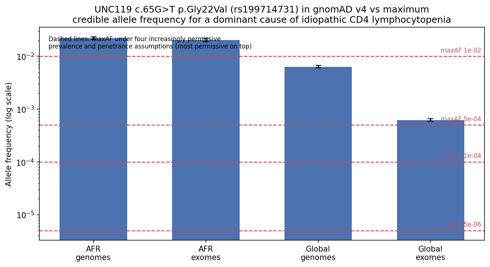
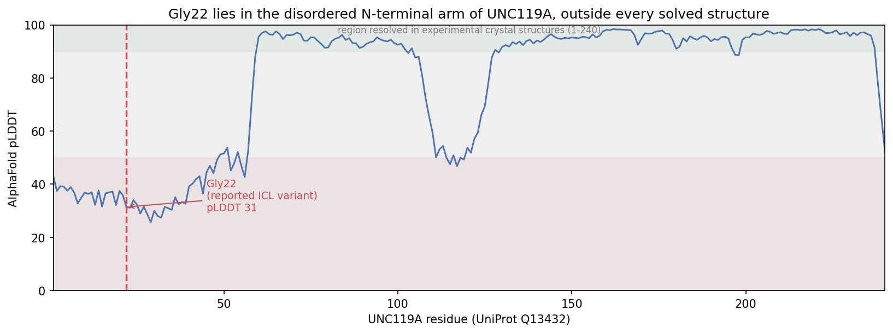
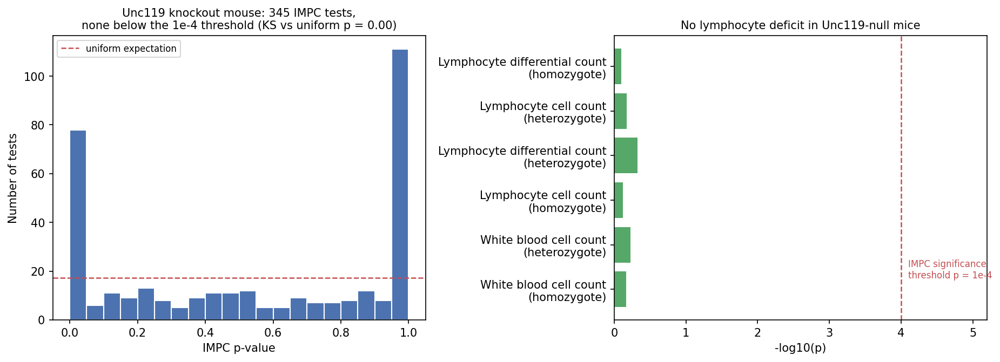
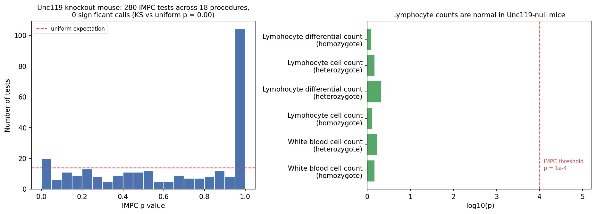
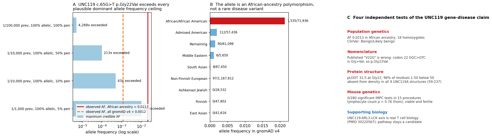
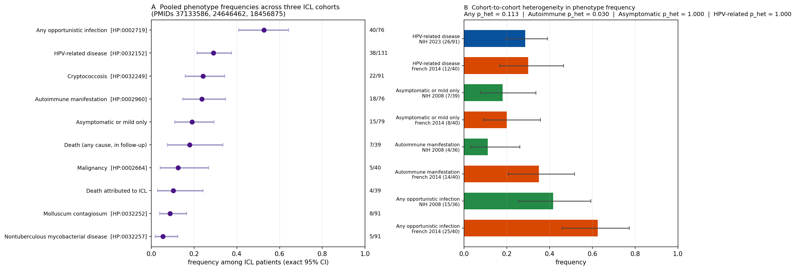

Idiopathic CD4 Lymphocytopenia
A clinical syndrome of persistent CD4-positive T cell depletion below 300 cells per cubic millimetre, diagnosed by exclusion once HIV-1, HIV-2, HTLV infection, another defined immunodeficiency and lymphodepleting therapy have all been ruled out. The depleted CD4 compartment leaves cell-mediated immunity unable to control a characteristic set of pathogens: human papillomavirus, Cryptococcus, molluscum contagiosum virus, nontuberculous mycobacteria and JC virus. Virus-driven and other cancers are commoner than in the general population, and about a third of patients carry an autoimmune condition. CD8, natural killer and B cell counts are reduced in many patients, so the deficit is often broader than the CD4 lineage alone. No cause is established in most patients, and the upstream mechanisms recorded here are competing candidates rather than one agreed lesion.
Ask OpenScientist
Ask a research question about Idiopathic CD4 Lymphocytopenia. OpenScientist will conduct autonomous deep research using the Disorder Mechanisms Knowledge Base and PubMed literature (typically 10-30 minutes).
Do not include personal health information in your question. Questions and results are cached in your browser's local storage.
Inheritance
1Show evidence (1 reference)
Mechanistic Hypotheses
6Show evidence (3 references)
Show evidence (3 references)
Show evidence (2 references)
Show evidence (2 references)
Show evidence (2 references)
Show evidence (2 references)
Discussions and Knowledge Gaps
2- The assays cluster patients into groups, each dominated by one mechanism, and membership predicts whether the patient's cells expand in a lymphocyte-free host.
- The assays are abnormal in overlapping and uninformative combinations, or are normal in most patients, leaving the depletion unaccounted for.
Pathophysiology
9Show evidence (1 reference)
Show evidence (1 reference)
Show evidence (2 references)
Show evidence (1 reference)
Show evidence (4 references)
Show evidence (2 references)
Show evidence (2 references)
Show evidence (2 references)
Show evidence (1 reference)
Pathograph
Phenotypes
16Blood 5
Show evidence (2 references)
Show evidence (2 references)
Show evidence (2 references)
Show evidence (2 references)
Show evidence (1 reference)
Endocrine 1
Show evidence (2 references)
Immune 8
Show evidence (2 references)
Show evidence (2 references)
Show evidence (2 references)
Show evidence (1 reference)
Show evidence (2 references)
Show evidence (2 references)
Show evidence (2 references)
Show evidence (1 reference)
Integument 2
Show evidence (2 references)
Show evidence (1 reference)
Genetic Associations
1Show evidence (2 references)
Variants (1)
Show evidence (2 references)
External Assertions
2Medical Actions
5Show evidence (2 references)
Show evidence (2 references)
Show evidence (2 references)
Show evidence (2 references)
Show evidence (1 reference)
Diagnosis
4Show evidence (1 reference)
Show evidence (1 reference)
Show evidence (2 references)
Show evidence (1 reference)
Progression
3Show evidence (2 references)
Show evidence (2 references)
Show evidence (2 references)
Prevalence
1Show evidence (2 references)
Differential Diagnoses
6Conditions with similar clinical presentations that must be differentiated from Idiopathic CD4 Lymphocytopenia:
- HIV and HTLV testing is negative, and must be before the diagnosis is made.
- The opportunistic infection spectrum differs from that of untreated HIV type 1 infection.
- CD4 and CD8 counts are stable or drift slightly upward rather than declining.
Show evidence (2 references)
- X-linked inheritance, with a MAGT1 variant on sequencing.
- Chronic Epstein-Barr virus viraemia and EBV-driven lymphoproliferation.
- Defective T cell receptor-induced magnesium influx.
Show evidence (1 reference)
- A biallelic ITK variant on sequencing.
- Absent invariant natural killer T cells.
- Epstein-Barr virus-driven lymphoproliferation in most reported patients.
Show evidence (1 reference)
- Absent rather than reduced CD4-positive T cells, with increased double-negative T cells.
- A biallelic CD4 variant on sequencing.
Show evidence (1 reference)
- A pathogenic variant in a known immunodeficiency gene on exome or panel sequencing.
- Often childhood onset, where this syndrome presents in adult life.
Show evidence (1 reference)
- An identifiable cause on history, medication review or workup.
- CD4 counts may recover when the cause is treated.
Show evidence (2 references)
Clinical Trials
6Show evidence (1 reference)
Show evidence (1 reference)
Show evidence (1 reference)
Show evidence (1 reference)
Show evidence (1 reference)
Show evidence (1 reference)
Animal Models
1Show evidence (1 reference)
Show evidence (1 reference)
Show evidence (1 reference)
Show evidence (1 reference)
Source YAML
click to showname: Idiopathic CD4 Lymphocytopenia
creation_date: "2026-11-16T21:58:59Z"
category: Complex
description: >-
A clinical syndrome of persistent CD4-positive T cell depletion below 300 cells
per cubic millimetre, diagnosed by exclusion once HIV-1, HIV-2, HTLV infection,
another defined immunodeficiency and lymphodepleting therapy have all been ruled
out. The depleted CD4 compartment leaves cell-mediated immunity unable to control
a characteristic set of pathogens: human papillomavirus, Cryptococcus, molluscum
contagiosum virus, nontuberculous mycobacteria and JC virus. Virus-driven and
other cancers are commoner than in the general population, and about a third of
patients carry an autoimmune condition. CD8, natural killer and B cell counts are
reduced in many patients, so the deficit is often broader than the CD4 lineage
alone. No cause is established in most patients, and the upstream mechanisms
recorded here are competing candidates rather than one agreed lesion.
notes: >-
Curated as a single Disease entry rather than a Grouping, which is the lump/split
question posed by the claim issue. Three things decided it. The syndrome has a
consensus case definition that every cohort applies, so its membership is stated
rather than inferred. The large cohorts report a reproducible downstream
pathograph: the 2023 NIH series of 91 patients found HPV disease, cryptococcosis,
cancer and autoimmunity recurring together and called it a unifying pattern, and
the 29 percent HPV figure replicates across continents. And a monogenic cause is
the exception, not the rule: whole-exome or panel sequencing of 84 of the 108
enrolled NIH patients found a monogenic cause in 7 percent, and those patients
were then excluded from the ICL analysis, which is what the case definition
requires. So the gene-defined causes are not subtypes of this entry. They are
separate diseases that present with the same laboratory finding, and they are
recorded in differential_diagnoses; MAGT1, ITK, CD4 and STK4 deficiency each
already have their own KB entry.
What is left is a convergent phenotype with several candidate upstream lesions.
Those are carried as mechanistic_hypotheses and as provisional pathophysiology
nodes feeding the defining depletion node, because no cohort has shown any one of
them to account for the syndrome.
UNC119 is recorded as a DISPUTED gene, not as a cause. MONDO:0014226 merges the
OMIM gene entry immunodeficiency 13 into the clinical syndrome, so the gene has to
be addressed by this entry, and the schema asks for a genetic row graded DISPUTED
rather than a subtype where a locus claim is unsettled. The claim rests on one
proband reported in 2012 and has not been replicated in the thirteen years since,
in a period during which two large cohorts sequenced their patients and named six
other genes. ClinVar classifies the reported allele NM_005148.4(UNC119):c.65G>T
(p.Gly22Val) as Benign/Likely benign with criteria provided, multiple submitters
and no conflicts, last evaluated 2026-01-28 (ClinVar variation 88737, checked
2026-11-17); that classification is recorded in external_assertions and as the
variant's clinical_significance, since ClinVar is not a citable reference prefix
here. The in vitro LCK-trafficking work in the same paper is cited on its own
terms, and the UNC119A-to-LCK mechanism is independently established in primary T
cells, so the pathway is a live candidate even though the allele is not a
Mendelian cause.
Prevalence is recorded qualitatively. No population-based registry or incidence
estimate for this syndrome was located, and Orphanet ORPHA:228000 carries no
prevalence class, so no numeric rate is given.
Sources: a 3-iteration OpenScientist deep-research report
(research/Idiopathic_CD4_Lymphocytopenia-deep-research-openscientist.md; 13 of 13
references resolved, no unresolved identifiers) was used as a lead list. Its
ontology suggestions were not used: 11 of its 31 checked labels were mismatched,
including every NCIT treatment CURIE it proposed, and two of its HPO suggestions
name different concepts (HP:0032252 is Granuloma, not molluscum contagiosum;
HP:0032257 is Severe Histoplasma capsulatum infection, not nontuberculous
mycobacterial disease). Every term bound below was looked up in the committed
caches or in OLS, and every snippet is quoted from a directly fetched reference.
disease_term:
preferred_term: idiopathic CD4 lymphocytopenia
term:
id: MONDO:0014226
label: idiopathic CD4 lymphocytopenia
synonyms:
- ICL
- idiopathic CD4 positive T-lymphocytopenia
- idiopathic CD4 T lymphocytopenia
- idiopathic CD4+ lymphocytopenia
- immunodeficiency 13
- IMD13
parents:
- Immunodeficiency Disease
external_assertions:
- name: OMIM immunodeficiency 13 record
source: OMIM
assertion_type: disease_record
external_id: OMIM:615518
url: https://omim.org/entry/615518
description: >-
The OMIM phenotype record that MONDO:0014226 merges with the clinical syndrome.
It assigns the entity to UNC119 on the strength of the single 2012 proband and
assigns autosomal dominant inheritance. This entry treats that gene assignment
as disputed; see the genetic row for UNC119.
- name: ClinVar UNC119 c.65G>T (p.Gly22Val)
source: ClinVar
assertion_type: variant_classification
external_id: NM_005148.4(UNC119):c.65G>T
url: https://www.ncbi.nlm.nih.gov/clinvar/variation/88737/
description: >-
The allele reported in the single UNC119 proband, classified Benign/Likely
benign with criteria provided, multiple submitters and no conflicts, last
evaluated 2026-01-28. Recorded as an external assertion rather than as an
evidence item because ClinVar is not a citable reference prefix in this
repository; the classification is ClinVar's, not this entry's.
references:
- reference: PMID:37133586
title: Reappraisal of Idiopathic CD4 Lymphocytopenia at 30 Years.
- reference: PMID:24646462
title: "Idiopathic CD4 lymphocytopenia: clinical and immunologic characteristics and follow-up of 40 patients."
- reference: PMID:18456875
title: "Idiopathic CD4+ lymphocytopenia: natural history and prognostic factors."
- reference: PMID:16763460
title: Idiopathic CD4 lymphocytopenia.
- reference: PMID:8609222
title: Apoptotic depletion of CD4+ T cells in idiopathic CD4+ T lymphocytopenia.
- reference: PMID:10452627
title: Overexpression of Fas/CD95 and Fas-induced apoptosis in a patient with idiopathic CD4+ T lymphocytopenia.
- reference: PMID:20038787
title: Idiopathic CD4+ T-cell lymphocytopenia is associated with impaired membrane expression of the chemokine receptor CXCR4.
- reference: PMID:32634122
title: Prevalence and pathogenicity of autoantibodies in patients with idiopathic CD4 lymphopenia.
- reference: PMID:11342421
title: A potential role for interleukin-7 in T-cell homeostasis.
- reference: PMID:26675348
title: Administration of interleukin-7 increases CD4 T cells in idiopathic CD4 lymphocytopenia.
- reference: PMID:42155681
title: Long-acting IL-7 restores T-cell reconstitution in a humanized mouse model of lymphopenia.
- reference: PMID:21447008
title: Non-myeloablative hematopoietic stem cell transplantation in the treatment of severe idiopathic CD4+ lymphocytopenia.
- reference: PMID:22184408
title: A mutation in the human Uncoordinated 119 gene impairs TCR signaling and is associated with CD4 lymphopenia.
- reference: PMID:30220567
title: The Ciliary Machinery Is Repurposed for T Cell Immune Synapse Trafficking of LCK.
- reference: PMID:39814552
title: UNC119 regulates T-cell receptor signalling in primary T cells and T acute lymphocytic leukaemia.
- reference: PMID:21796205
title: Second messenger role for Mg2+ revealed by human T-cell immunodeficiency.
- reference: PMID:25061172
title: Identification of ITK deficiency as a novel genetic cause of idiopathic CD4+ T-cell lymphopenia.
mechanistic_hypotheses:
- hypothesis_group_id: icl_autoantibody_mediated_depletion
hypothesis_label: Anti-lymphocyte autoantibodies destroy CD4 T cells
status: EMERGING
description: >-
On this account the depletion is antibody-mediated. Sera from the NIH cohort
carry large numbers of autoantibodies, half of the patients have anti-CD4 cell
antibodies detectable by flow cytometry, and in half of those the antibodies
lyse CD4 T cells; classical complement activation was found on CD4 T cells in
vivo in 14 percent of the cohort. The attraction of this account is that it
supplies an effector mechanism for the depletion and a drug target, which is the
rationale for the belimumab pilot. What it does not yet explain is direction: the
autoantibodies are mostly against private targets and track neither the patients'
autoimmune disease status nor, quantitatively, their CD4 counts, so whether they
cause the lymphopenia or follow it is open.
evidence:
- reference: PMID:32634122
reference_title: Prevalence and pathogenicity of autoantibodies in patients with idiopathic CD4 lymphopenia.
supports: SUPPORT
evidence_source: HUMAN_CLINICAL
directness: DIRECT
snippet: >-
The targets included lymphocyte intracellular and membrane antigens, confirmed
by the detection by flow of IgM and IgG (mostly IgG1 and IgG4) anti-CD4+ cell
Abs in 50% of the patients, with half of these cases triggering lysis of CD4+ T
cells.
explanation: >-
Antibodies specific for CD4 T cells are present in half the cohort and are
cytolytic in half of those, which is the effector step this hypothesis needs.
- reference: PMID:32634122
reference_title: Prevalence and pathogenicity of autoantibodies in patients with idiopathic CD4 lymphopenia.
supports: SUPPORT
evidence_source: HUMAN_CLINICAL
directness: INDIRECT
snippet: We also detected in vivo classical complement activation on CD4+ T cells in 14% of the whole cohort.
explanation: >-
Complement deposition on the patients' own CD4 T cells shows the pathway is
engaged in vivo rather than only in the assay.
- reference: PMID:32634122
reference_title: Prevalence and pathogenicity of autoantibodies in patients with idiopathic CD4 lymphopenia.
supports: REFUTE
evidence_source: HUMAN_CLINICAL
directness: DIRECT
snippet: >-
All ICL patients had a multitude of autoantibodies mostly directed against
private (not shared) targets and unrelated quantitatively or qualitatively to
the patients' autoimmune disease status.
explanation: >-
The autoantibody burden does not correspond to the patients' clinical
autoimmunity, which argues against reading it as the driving lesion and is why
this hypothesis is recorded as emerging.
- hypothesis_group_id: icl_accelerated_apoptosis
hypothesis_label: Accelerated Fas-mediated apoptosis depletes the CD4 compartment
status: ALTERNATIVE
description: >-
The oldest mechanistic account, and the one with the longest supporting series.
CD4 T cells from most patients in an early cohort died by accelerated programmed
cell death, with Fas and Fas ligand overexpressed before any stimulation and the
death partly blocked by anti-Fas antibody; a later single patient showed CD95 on
almost every lymphocyte with apoptosis confined to the CD4 subset. The 2008
natural-history cohort found increased activation and turnover in CD4 but not CD8
T cells, which fits a compartment being consumed rather than not made. What keeps
this an alternative rather than the canonical account is that none of the work
establishes what drives the Fas pathway, and the patients in whom both CD4 and
CD8 are deeply reduced are not explained by a CD4-selective death pathway.
evidence:
- reference: PMID:8609222
reference_title: Apoptotic depletion of CD4+ T cells in idiopathic CD4+ T lymphocytopenia.
supports: SUPPORT
evidence_source: IN_VITRO
directness: DIRECT
snippet: >-
We report that CD4+ T cells from seven of eight ICL patients underwent
accelerated programmed cell death, a process facilitated by T cell receptor
cross-linking.
explanation: Accelerated death of the patients' own CD4 T cells in seven of eight patients.
- reference: PMID:8609222
reference_title: Apoptotic depletion of CD4+ T cells in idiopathic CD4+ T lymphocytopenia.
supports: SUPPORT
evidence_source: IN_VITRO
directness: DIRECT
snippet: >-
Apoptosis was associated with enhanced expression of Fas and Fas ligand in
unstimulated cell populations, and partially inhibited by soluble anti-Fas mAb.
explanation: >-
Names Fas as the pathway and shows the death is partly blocked when Fas is
neutralised.
- reference: PMID:18456875
reference_title: "Idiopathic CD4+ lymphocytopenia: natural history and prognostic factors."
supports: SUPPORT
evidence_source: HUMAN_CLINICAL
directness: INDIRECT
snippet: Immunologic analyses revealed increased activation and turnover in CD4 but not CD8 T lymphocytes.
explanation: >-
Increased turnover restricted to the CD4 compartment in a prospective cohort is
what a consumption mechanism predicts.
- hypothesis_group_id: icl_cxcr4_trafficking_defect
hypothesis_label: Defective surface CXCR4 misdirects CD4 T cell trafficking
status: ALTERNATIVE
description: >-
On this account the circulating CD4 count is low because the cells cannot traffic
normally, not because they are destroyed. All six patients in the defining series
had little surface CXCR4 on their CD4 T cells, with CXCR4 and its ligand CXCL12
accumulating inside the cell and chemotaxis towards CXCL12 reduced while the
response to CXCL8 was intact. The account has a treatment prediction and it was
met: adding interleukin 2 restored surface CXCR4 in five of six patients in
vitro, and giving it therapeutically raised both the CD4 count and surface CXCR4
in three of four patients treated. It rests on small numbers, and whether the
trafficking defect is primary or a consequence of the lymphopenic state is
untested.
evidence:
- reference: PMID:20038787
reference_title: Idiopathic CD4+ T-cell lymphocytopenia is associated with impaired membrane expression of the chemokine receptor CXCR4.
supports: SUPPORT
evidence_source: HUMAN_CLINICAL
directness: DIRECT
snippet: >-
For all 6 patients studied, a profound defect in CXCR4 expression was detected
at the surface of CD4(+) T lymphocytes, in association with an abnormal
intracellular accumulation of CXCR4 and of its natural ligand, the chemokine
CXCL12.
explanation: The defect was present in every patient studied and is specific to the receptor's surface pool.
- reference: PMID:20038787
reference_title: Idiopathic CD4+ T-cell lymphocytopenia is associated with impaired membrane expression of the chemokine receptor CXCR4.
supports: SUPPORT
evidence_source: HUMAN_CLINICAL
directness: INDIRECT
snippet: >-
Upon therapeutic administration of IL-2, CD4(+) T-cell count and membrane CXCR4
expression and function improved over time in 3 of 4 patients treated.
explanation: >-
The CD4 count and the receptor defect move together under treatment, which is
the prediction that makes this more than an association.
- hypothesis_group_id: icl_impaired_il7_homeostasis
hypothesis_label: A blunted interleukin-7 response fails to refill the CD4 compartment
status: ALTERNATIVE
description: >-
Interleukin 7 normally rises as CD4 cells are lost and drives their regeneration,
and that inverse relationship holds in HIV infection and after chemotherapy. In
idiopathic CD4 lymphocytopenia the relationship is much weaker, which suggests
the homeostatic loop itself is broken rather than the cells being destroyed
faster than they can be replaced. This is the rationale behind every
interleukin-7 trial in the disease, and the trials support it indirectly:
recombinant interleukin 7 does raise circulating and tissue T cell numbers. The
original observation is correlational and the measurement is of serum cytokine
rather than of receptor signalling, so the broken step is not identified.
evidence:
- reference: PMID:11342421
reference_title: A potential role for interleukin-7 in T-cell homeostasis.
supports: SUPPORT
evidence_source: HUMAN_CLINICAL
directness: DIRECT
snippet: >-
Furthermore, in patients with idiopathic CD4 lymphopenia, a much weaker
relationship between IL-7 levels and peripheral blood CD4 counts was observed,
suggesting that an impaired IL-7 response to CD4 depletion may contribute to the
impaired lymphocyte homeostasis observed in this population.
explanation: >-
States the broken homeostatic relationship in these patients, against the intact
relationship the same study measured in other causes of CD4 depletion.
- reference: PMID:26675348
reference_title: Administration of interleukin-7 increases CD4 T cells in idiopathic CD4 lymphocytopenia.
supports: SUPPORT
evidence_source: HUMAN_CLINICAL
directness: INDIRECT
snippet: >-
Quantitatively, rhIL-7 led to an increase in the number of circulating CD4 and
CD8 T cells and tissue-resident CD3 T cells in the gut mucosa and bone marrow.
explanation: >-
Supplying the cytokine raises the cell numbers, which is consistent with the
endogenous response being the limiting step, though the trial had no control arm.
- hypothesis_group_id: icl_t_cell_intrinsic_defect
hypothesis_label: A T cell intrinsic defect limits proliferation and survival in a subgroup
status: EMERGING
description: >-
Transferring patient peripheral blood mononuclear cells into lymphocyte-free
immunodeficient mice separates the patients. Cells from some patients fail to
expand in a host that is empty of competing lymphocytes and carries no human
autoantibodies or human cytokine environment, which locates the limitation in the
T cells themselves rather than in their surroundings. That is the cleanest
available argument that at least part of this syndrome is T cell intrinsic, and it
predicts that the subgroup is identifiable before treatment. It is a xenogeneic
model, a human cell in a mouse niche, and it applies to a subgroup rather than to
the syndrome.
evidence:
- reference: PMID:42155681
reference_title: Long-acting IL-7 restores T-cell reconstitution in a humanized mouse model of lymphopenia.
supports: SUPPORT
evidence_source: MODEL_ORGANISM
directness: INDIRECT
snippet: >-
This suggests a potential T-cell intrinsic factor/s as the cause, or
contributor, of lymphopenia in these patients, since a robust impediment to
T-cell proliferation and/or survival persists even in a T-cell empty and
xenogenic host.
explanation: >-
The defect travels with the cells into a host lacking the patient's own
environment, which is what distinguishes an intrinsic from an extrinsic cause.
- reference: PMID:42155681
reference_title: Long-acting IL-7 restores T-cell reconstitution in a humanized mouse model of lymphopenia.
supports: SUPPORT
evidence_source: MODEL_ORGANISM
directness: INDIRECT
snippet: >-
Using a humanized mouse model, we have previously identified a subgroup of
people with ICL (pICL) who, unlike healthy donors (HD), harbor T-cells incapable
of reconstituting an immunocompromised mouse host through homeostatic expansion
explanation: >-
States that this applies to a subgroup, which is why the hypothesis is scoped
that way rather than offered for the whole syndrome.
- hypothesis_group_id: icl_unc119_lck_trafficking
hypothesis_label: UNC119-dependent LCK delivery to the immune synapse is the lesion
status: ALTERNATIVE
description: >-
The mechanism proposed with the 2012 UNC119 proband, and the reason OMIM assigns
this entity to that gene. UNC119A carries myristoylated LCK to the immunological
synapse, and a disruption of that delivery would blunt proximal T cell receptor
signalling and the proliferation that maintains the CD4 compartment. The
trafficking step is independently established, in structural work and in primary
human T cells where inhibiting UNC119 reduces LCK at the synapse without
affecting its phosphorylation. What this hypothesis does not have is a genetic
foothold: the only allele offered for it is classified benign, and no second
patient has been reported in thirteen years. It is kept as a candidate pathway
for the syndrome, not as an account of the reported family.
evidence:
- reference: PMID:22184408
reference_title: A mutation in the human Uncoordinated 119 gene impairs TCR signaling and is associated with CD4 lymphopenia.
supports: SUPPORT
evidence_source: IN_VITRO
directness: INDIRECT
snippet: >-
The patient's cells have reduced response to TCR stimulation, with impairment in
both localization and enzymatic activation of the lymphocyte-specific kinase
(Lck) resulting in decreased cell proliferation.
explanation: >-
The proband's own cells show the signalling and proliferation defect the
hypothesis predicts, measured in vitro.
- reference: PMID:39814552
reference_title: UNC119 regulates T-cell receptor signalling in primary T cells and T acute lymphocytic leukaemia.
supports: SUPPORT
evidence_source: IN_VITRO
directness: INDIRECT
snippet: >-
Inhibiting UNC119 reduces localisation of LCK without impairing LCK
phosphorylation and reduces T-cell receptor signal transduction.
explanation: >-
Establishes the trafficking step in primary human T cells independently of the
disputed allele, which is why the pathway survives the allele's reclassification.
pathophysiology:
- name: Blunted Interleukin-7 Homeostatic Response
biological_scale: MOLECULAR
mechanism_confidence: PROVISIONAL
description: >-
Serum interleukin 7 normally rises in inverse proportion to the circulating CD4
count and drives regeneration of the compartment. In these patients that
relationship is much weaker than in other causes of CD4 depletion, so the loop
that should refill the compartment does not respond to its emptying. Recorded as
provisional: the observation is a correlation between a serum cytokine level and
a cell count, and the step that fails between them has not been identified.
biological_processes:
- preferred_term: interleukin-7-mediated signaling pathway
modifier: DECREASED
term:
id: GO:0038111
label: interleukin-7-mediated signaling pathway
- preferred_term: T cell homeostasis
modifier: DECREASED
term:
id: GO:0043029
label: T cell homeostasis
cell_types:
- preferred_term: CD4-positive T cell
term:
id: CL:0000624
label: CD4-positive, alpha-beta T cell
downstream:
- target: Persistent CD4-Positive T Cell Depletion
description: >-
A homeostatic response that does not scale with the depletion leaves the
compartment unreplenished.
evidence:
- reference: PMID:11342421
reference_title: A potential role for interleukin-7 in T-cell homeostasis.
supports: SUPPORT
evidence_source: HUMAN_CLINICAL
directness: INDIRECT
snippet: >-
suggesting that an impaired IL-7 response to CD4 depletion may contribute to
the impaired lymphocyte homeostasis observed in this population
explanation: >-
The authors propose exactly this link, from the blunted cytokine response to
the failure of lymphocyte homeostasis.
evidence:
- reference: PMID:11342421
reference_title: A potential role for interleukin-7 in T-cell homeostasis.
supports: SUPPORT
evidence_source: HUMAN_CLINICAL
directness: DIRECT
snippet: >-
Furthermore, in patients with idiopathic CD4 lymphopenia, a much weaker
relationship between IL-7 levels and peripheral blood CD4 counts was observed
explanation: Establishes the blunted interleukin-7 response as a finding in this disease.
- name: Anti-CD4 T Cell Autoantibody-Mediated Lymphocyte Destruction
biological_scale: CELLULAR
mechanism_confidence: PROVISIONAL
description: >-
Half of the patients in the NIH cohort have IgM and IgG antibodies against CD4 T
cells, and in half of those the antibodies lyse the cells; classical complement
activation was detected on circulating CD4 T cells in 14 percent of the cohort.
Provisional because the autoantibody repertoire is largely against private
targets and does not track the patients' CD4 counts, so the destruction this node
describes is demonstrated as a capability rather than quantified as the cause of
the depletion.
biological_processes:
- preferred_term: antibody-dependent cellular cytotoxicity
modifier: INCREASED
term:
id: GO:0001788
label: antibody-dependent cellular cytotoxicity
- preferred_term: complement activation, classical pathway
modifier: INCREASED
term:
id: GO:0006958
label: complement activation, classical pathway
cell_types:
- preferred_term: CD4-positive T cell
term:
id: CL:0000624
label: CD4-positive, alpha-beta T cell
downstream:
- target: Persistent CD4-Positive T Cell Depletion
description: Antibody-dependent and complement-dependent lysis removes CD4 T cells from the circulation.
evidence:
- reference: PMID:32634122
reference_title: Prevalence and pathogenicity of autoantibodies in patients with idiopathic CD4 lymphopenia.
supports: SUPPORT
evidence_source: HUMAN_CLINICAL
directness: INDIRECT
snippet: >-
Our data demonstrate that a high prevalence of autoantibodies in ICL, some of
which are specific for CD4+ T cells, may contribute to pathogenesis, and may
represent a potentially novel therapeutic target.
explanation: >-
The authors' own reading of the link, stated as a contribution to pathogenesis
rather than as the established cause.
evidence:
- reference: PMID:32634122
reference_title: Prevalence and pathogenicity of autoantibodies in patients with idiopathic CD4 lymphopenia.
supports: SUPPORT
evidence_source: HUMAN_CLINICAL
directness: DIRECT
snippet: with half of these cases triggering lysis of CD4+ T cells
explanation: Cytolytic anti-CD4 antibodies in half the affected patients, which is what this node asserts.
- name: Accelerated Fas-Mediated CD4 T Cell Apoptosis
biological_scale: CELLULAR
mechanism_confidence: PROVISIONAL
description: >-
CD4 T cells from most patients in an early cohort died by accelerated programmed
cell death, with Fas and Fas ligand overexpressed before stimulation, the death
facilitated by T cell receptor cross-linking and partly blocked by anti-Fas
antibody. A later single patient had CD95 on almost all lymphocytes with
apoptosis confined to CD4 cells. Provisional because what drives the Fas pathway
here is unknown, and the series are small and old.
biological_processes:
- preferred_term: T cell apoptotic process
modifier: INCREASED
term:
id: GO:0070231
label: T cell apoptotic process
- preferred_term: extrinsic apoptotic signaling pathway
modifier: INCREASED
term:
id: GO:0097191
label: extrinsic apoptotic signaling pathway
cell_types:
- preferred_term: CD4-positive T cell
term:
id: CL:0000624
label: CD4-positive, alpha-beta T cell
downstream:
- target: Persistent CD4-Positive T Cell Depletion
description: Accelerated death of the CD4 compartment faster than it is replaced.
evidence:
- reference: PMID:10452627
reference_title: Overexpression of Fas/CD95 and Fas-induced apoptosis in a patient with idiopathic CD4+ T lymphocytopenia.
supports: SUPPORT
evidence_source: HUMAN_CLINICAL
directness: DIRECT
snippet: >-
CD4+ T lymphopenia observed in our patient correlated with an overexpression of
Fas together with spontaneous and Fas-induced apoptosis.
explanation: >-
States the link between the apoptotic phenotype and the lymphopenia in a
patient, which is the edge this node asserts.
evidence:
- reference: PMID:8609222
reference_title: Apoptotic depletion of CD4+ T cells in idiopathic CD4+ T lymphocytopenia.
supports: SUPPORT
evidence_source: IN_VITRO
directness: DIRECT
snippet: >-
We report that CD4+ T cells from seven of eight ICL patients underwent
accelerated programmed cell death
explanation: The accelerated death this node describes, in seven of eight patients.
- reference: PMID:10452627
reference_title: Overexpression of Fas/CD95 and Fas-induced apoptosis in a patient with idiopathic CD4+ T lymphocytopenia.
supports: SUPPORT
evidence_source: HUMAN_CLINICAL
directness: DIRECT
snippet: >-
The patient had a high level of spontaneous apoptosis, and apoptotic cells were
all identified as being CD4+ T cells.
explanation: Apoptosis restricted to the CD4 compartment, which is the selectivity this node requires.
- name: Defective Surface CXCR4 Expression on CD4 T Cells
biological_scale: MOLECULAR
mechanism_confidence: PROVISIONAL
description: >-
In the defining series all six patients had little CXCR4 at the CD4 T cell
surface, with the receptor and its ligand CXCL12 accumulating intracellularly,
reduced chemotaxis towards CXCL12 and a preserved response to CXCL8. Interleukin
2 corrected the surface expression in vitro and, given therapeutically, raised
both the receptor's expression and the CD4 count. Provisional on six patients,
and the account does not establish whether the trafficking defect precedes the
lymphopenia.
biological_processes:
- preferred_term: protein localization to plasma membrane
modifier: DECREASED
term:
id: GO:0072659
label: protein localization to plasma membrane
- preferred_term: CXCL12-activated CXCR4 signaling pathway
modifier: DECREASED
term:
id: GO:0038160
label: CXCL12-activated CXCR4 signaling pathway
- preferred_term: T cell chemotaxis
modifier: DECREASED
term:
id: GO:0010818
label: T cell chemotaxis
cell_types:
- preferred_term: CD4-positive T cell
term:
id: CL:0000624
label: CD4-positive, alpha-beta T cell
downstream:
- target: Persistent CD4-Positive T Cell Depletion
description: >-
Impaired CXCL12-directed trafficking is proposed to account for the low
circulating CD4 count, and correcting the receptor with interleukin 2 raises
that count.
evidence:
- reference: PMID:20038787
reference_title: Idiopathic CD4+ T-cell lymphocytopenia is associated with impaired membrane expression of the chemokine receptor CXCR4.
supports: SUPPORT
evidence_source: HUMAN_CLINICAL
directness: INDIRECT
snippet: >-
Upon therapeutic administration of IL-2, CD4(+) T-cell count and membrane
CXCR4 expression and function improved over time in 3 of 4 patients treated.
explanation: >-
The receptor defect and the cell count move together under treatment, which is
the evidence for this edge.
evidence:
- reference: PMID:20038787
reference_title: Idiopathic CD4+ T-cell lymphocytopenia is associated with impaired membrane expression of the chemokine receptor CXCR4.
supports: SUPPORT
evidence_source: HUMAN_CLINICAL
directness: DIRECT
snippet: >-
Therefore, our data indicate that ICL is associated with defective surface
expression of CXCR4, which may be reversed by IL-2.
explanation: The authors' summary of the defect this node records.
- name: Persistent CD4-Positive T Cell Depletion
biological_scale: ORGANISM
description: >-
The defining lesion and the one step every case shares: a circulating CD4 T cell
count persistently below 300 cells per cubic millimetre, confirmed on separate
occasions, with no infectious, iatrogenic or monogenic cause found. The median
count in the largest cohort was 80 cells per cubic millimetre. CD8 counts are
reduced alongside CD4 in about half of patients, and natural killer and B cell
numbers less often, so the depletion is frequently not confined to the CD4
lineage. Counts drift upward slightly over years rather than falling, which is
what separates the natural history from untreated HIV infection.
cell_types:
- preferred_term: CD4-positive T cell
term:
id: CL:0000624
label: CD4-positive, alpha-beta T cell
- preferred_term: naive CD4-positive T cell
term:
id: CL:0000895
label: naive thymus-derived CD4-positive, alpha-beta T cell
biological_processes:
- preferred_term: T cell homeostasis
modifier: DECREASED
term:
id: GO:0043029
label: T cell homeostasis
locations:
- preferred_term: blood
term:
id: UBERON:0000178
label: blood
downstream:
- target: Failure of CD4-Dependent Cell-Mediated Immunity
description: >-
The depleted compartment cannot provide the CD4 help that controls
papillomavirus, encapsulated fungi, mycobacteria and polyomavirus, and the risk
rises as the count falls.
evidence:
- reference: PMID:37133586
reference_title: Reappraisal of Idiopathic CD4 Lymphocytopenia at 30 Years.
supports: SUPPORT
evidence_source: HUMAN_CLINICAL
directness: DIRECT
snippet: >-
A reduced CD4 count (<100 cells per cubic millimeter), as compared with a CD4
count of 101 to 300 cells, was associated with a higher risk of opportunistic
infection (odds ratio, 5.3; 95% confidence interval [CI], 2.8 to 10.7)
explanation: >-
A dose-response between the depth of depletion and opportunistic infection,
which is the quantitative form of this edge.
- reference: PMID:24646462
reference_title: "Idiopathic CD4 lymphocytopenia: clinical and immunologic characteristics and follow-up of 40 patients."
supports: SUPPORT
evidence_source: HUMAN_CLINICAL
directness: DIRECT
quote_role: BACKGROUND
snippet: as a result of profound cell-mediated immune-response deficiency
explanation: >-
Attributes the opportunistic infections of this disease to failure of
cell-mediated immunity. Quoted from this paper's introduction, which cites
earlier reports for the claim rather than deriving it from the French cohort.
- target: Impaired Immunosurveillance of Virus-Associated Malignancy
description: >-
Loss of CD4, CD8 and natural killer cells together is proposed to degrade
control of virus-driven and somatic neoantigens.
evidence:
- reference: PMID:37133586
reference_title: Reappraisal of Idiopathic CD4 Lymphocytopenia at 30 Years.
supports: SUPPORT
evidence_source: HUMAN_CLINICAL
directness: INDIRECT
snippet: >-
The increased risk of cancer in patients with ICL with concomitantly reduced
numbers of CD4, CD8, and NK cells further emphasizes the clinical implication
of severe lymphopenia on cancer immunosurveillance.
explanation: >-
Connects the multi-lineage depletion to the surveillance failure this branch
describes.
- target: Lymphopenia-Associated Breakdown of Self-Tolerance
description: >-
Autoimmune disease is commoner in the patients who retain the larger residual
CD4 pool, the opposite direction to the infection risk, which is why this is a
separate branch rather than a further consequence of deep depletion.
evidence:
- reference: PMID:37133586
reference_title: Reappraisal of Idiopathic CD4 Lymphocytopenia at 30 Years.
supports: SUPPORT
evidence_source: HUMAN_CLINICAL
directness: DIRECT
snippet: and a lower risk of autoimmunity (odds ratio, 0.5; 95% CI, 0.2 to 0.9)
explanation: >-
Autoimmunity runs opposite to the depth of depletion, establishing this as a
distinct branch.
- target: Impaired Primary Antibody Response to Novel Antigen
description: >-
Response to an antigen the patient has not met before fails in proportion to the
CD4 count, which is the help-dependent step.
evidence:
- reference: PMID:37133586
reference_title: Reappraisal of Idiopathic CD4 Lymphocytopenia at 30 Years.
supports: SUPPORT
evidence_source: HUMAN_CLINICAL
directness: DIRECT
snippet: >-
The lack of serologic response was associated with a lower median CD4+ T-cell
count at the time of immunization
explanation: >-
Ties failure of a primary antibody response to the depth of CD4 depletion in
the same patients.
evidence:
- reference: PMID:37133586
reference_title: Reappraisal of Idiopathic CD4 Lymphocytopenia at 30 Years.
supports: SUPPORT
evidence_source: HUMAN_CLINICAL
directness: DIRECT
snippet: >-
Idiopathic CD4 lymphocytopenia (ICL) is a clinical syndrome that is defined by
CD4 lymphopenia of less than 300 cells per cubic millimeter in the absence of
any primary or acquired cause of immunodeficiency.
explanation: The case definition, which makes this node the defining lesion of the entry.
- reference: PMID:37133586
reference_title: Reappraisal of Idiopathic CD4 Lymphocytopenia at 30 Years.
supports: SUPPORT
evidence_source: HUMAN_CLINICAL
directness: DIRECT
snippet: The median CD4+ T-cell count among the patients was 80 cells per cubic millimeter.
explanation: Quantifies the depletion in the largest cohort.
- reference: PMID:37133586
reference_title: Reappraisal of Idiopathic CD4 Lymphocytopenia at 30 Years.
supports: SUPPORT
evidence_source: HUMAN_CLINICAL
directness: DIRECT
snippet: >-
Both CD4+ and CD8+ T-cell counts (and consequently, total CD3+ T-cell counts)
were lower in the study patients than in healthy adults, but levels of NK and B
cells were similar in the two groups.
explanation: >-
Shows the depletion extends to CD8 in this cohort while NK and B cells are
preserved, which is the pattern the description qualifies.
- reference: PMID:42155681
reference_title: Long-acting IL-7 restores T-cell reconstitution in a humanized mouse model of lymphopenia.
supports: SUPPORT
evidence_source: HUMAN_CLINICAL
quote_role: BACKGROUND
directness: DIRECT
snippet: >-
In approximately half of the patients, the CD4 lymphopenia is accompanied by CD8
T-cell lymphopenia and, less commonly, low NK and B cell numbers
explanation: >-
Gives the proportion of patients whose depletion extends beyond the CD4 lineage.
Quoted from this paper's introduction, which is restating the clinical picture
rather than reporting its own mouse experiments.
- name: Failure of CD4-Dependent Cell-Mediated Immunity
biological_scale: ORGANISM
description: >-
With the CD4 compartment depleted, control of the pathogens that need CD4 help
fails, and it fails in a characteristic and reproducible pattern: papillomavirus
disease of skin and anogenital epithelium, cryptococcosis presenting most often
as meningoencephalitis, molluscum contagiosum, nontuberculous mycobacterial
disease and JC virus encephalitis. The spectrum is not the same as that of
untreated HIV infection, which is one argument that the pathogenesis differs.
biological_processes:
- preferred_term: T cell mediated immunity
modifier: DECREASED
term:
id: GO:0002456
label: T cell mediated immunity
cell_types:
- preferred_term: CD4-positive T cell
term:
id: CL:0000624
label: CD4-positive, alpha-beta T cell
downstream:
- target: Persistent human papillomavirus infection
description: The most reproducible manifestation, at 29 percent of the NIH cohort and 30 percent of the French cohort.
evidence:
- reference: PMID:37133586
reference_title: Reappraisal of Idiopathic CD4 Lymphocytopenia at 30 Years.
supports: SUPPORT
evidence_source: HUMAN_CLINICAL
directness: DIRECT
snippet: >-
The most prevalent opportunistic infections were diseases related to human
papillomavirus (in 29%), cryptococcosis (in 24%), molluscum contagiosum (in
9%), and nontuberculous mycobacterial diseases (in 5%).
explanation: Gives papillomavirus disease as the commonest opportunistic infection of this disease.
- target: Cryptococcal meningitis
description: >-
The second commonest opportunistic infection, and the presentation that most
often brings these patients to attention.
evidence:
- reference: PMID:37133586
reference_title: Reappraisal of Idiopathic CD4 Lymphocytopenia at 30 Years.
supports: SUPPORT
evidence_source: HUMAN_CLINICAL
directness: DIRECT
snippet: >-
and cryptococcosis (in 22 patients [24%]), which presented as meningoencephalitis
(in 16 patients [18%])
explanation: Gives both the cryptococcosis frequency and the proportion presenting in the central nervous system.
- target: Unusual molluscum contagiosum
description: Molluscum contagiosum in eight of the 91 patients in the largest cohort.
evidence:
- reference: PMID:37133586
reference_title: Reappraisal of Idiopathic CD4 Lymphocytopenia at 30 Years.
supports: SUPPORT
evidence_source: HUMAN_CLINICAL
directness: DIRECT
snippet: Eight patients had molluscum contagiosum
explanation: The count behind this phenotype in the largest cohort.
- target: Disseminated nontuberculous mycobacterial infection
description: >-
Nontuberculous mycobacterial disease in 5 percent of the NIH cohort, and one of
the two commonest presenting infections in the earlier natural-history cohort.
evidence:
- reference: PMID:18456875
reference_title: "Idiopathic CD4+ lymphocytopenia: natural history and prognostic factors."
supports: SUPPORT
evidence_source: HUMAN_CLINICAL
directness: DIRECT
snippet: Cryptococcal and nontuberculous mycobacterial infections were the major presenting opportunistic infections.
explanation: Names mycobacterial disease as a major presenting infection of this disease.
- target: JC encephalitis
description: Progressive multifocal leukoencephalopathy in three of the 91 patients.
evidence:
- reference: PMID:37133586
reference_title: Reappraisal of Idiopathic CD4 Lymphocytopenia at 30 Years.
supports: SUPPORT
evidence_source: HUMAN_CLINICAL
directness: DIRECT
snippet: progressive multifocal leukoencephalopathy (in 3 patients)
explanation: The count behind this phenotype.
evidence:
- reference: PMID:37133586
reference_title: Reappraisal of Idiopathic CD4 Lymphocytopenia at 30 Years.
supports: SUPPORT
evidence_source: HUMAN_CLINICAL
directness: DIRECT
snippet: >-
Although ICL has been consistently described as a heterogenous disorder, we
found a rather unifying pattern of clinical presentations of HPV-related
diseases, cryptococcosis, cancers, and autoimmunity
explanation: >-
The reproducible pattern of consequences that makes this node, and the single
entry, defensible.
- reference: PMID:37133586
reference_title: Reappraisal of Idiopathic CD4 Lymphocytopenia at 30 Years.
supports: SUPPORT
evidence_source: HUMAN_CLINICAL
directness: DIRECT
snippet: >-
In addition, the spectrum of the opportunistic infections observed in patients
with ICL is distinct from that in those with untreated HIV type 1, which
suggests differences in pathogenesis.
explanation: >-
Records that the pattern differs from that of HIV infection, which is why the
disease is not modelled as an HIV phenocopy.
- name: Impaired Immunosurveillance of Virus-Associated Malignancy
biological_scale: ORGANISM
mechanism_confidence: PROVISIONAL
description: >-
Invasive cancer is commoner in these patients than in the age- and sex-adjusted
general population, and the excess is concentrated in tumours with a viral or an
autoimmune-inflammatory antecedent: anal, vulvovaginal and oropharyngeal
squamous-cell carcinoma, Kaposi sarcoma, non-Hodgkin lymphoma and papillary
thyroid carcinoma. Provisional because the excess is an epidemiological
observation and the surveillance failure proposed to explain it has not been
measured directly in these patients.
biological_processes:
- preferred_term: adaptive immune response
modifier: DECREASED
term:
id: GO:0002250
label: adaptive immune response
cell_types:
- preferred_term: CD4-positive T cell
term:
id: CL:0000624
label: CD4-positive, alpha-beta T cell
- preferred_term: CD8-positive T cell
term:
id: CL:0000625
label: CD8-positive, alpha-beta T cell
- preferred_term: natural killer cell
term:
id: CL:0000623
label: natural killer cell
downstream:
- target: Squamous cell carcinoma
description: >-
Anal, vulvovaginal and oral or pharyngeal squamous-cell carcinoma, the
papillomavirus-associated tumours, were each in significant excess.
evidence:
- reference: PMID:37133586
reference_title: Reappraisal of Idiopathic CD4 Lymphocytopenia at 30 Years.
supports: SUPPORT
evidence_source: HUMAN_CLINICAL
directness: DIRECT
snippet: >-
The study patients with ICL had a significantly higher prevalence of six
cancers - anal, vulvovaginal, oral cavity or pharynx, papillary thyroid
carcinoma, non-Hodgkin's lymphoma, and Kaposi's sarcoma - than expected
cases in the general population.
explanation: >-
Names the squamous-cell sites in significant excess, which is what this edge
claims the surveillance failure produces.
- target: Non-Hodgkin lymphoma
description: One of the six tumour types in significant excess over the matched general population.
evidence:
- reference: PMID:37133586
reference_title: Reappraisal of Idiopathic CD4 Lymphocytopenia at 30 Years.
supports: SUPPORT
evidence_source: HUMAN_CLINICAL
directness: DIRECT
snippet: >-
Deficient immune responses against viral or somatic neoantigens may underlie
the increased susceptibility to virus-associated cancers (i.e., HPV, Kaposi's
sarcoma-associated herpesvirus, and Epstein-Barr virus) and non-Hodgkin's
lymphoma
explanation: >-
The mechanism the authors propose for the lymphoma and other virus-associated
tumours, stated as a possibility.
- target: Kaposi sarcoma
description: A herpesvirus-driven tumour, in significant excess in the cohort.
evidence:
- reference: PMID:37133586
reference_title: Reappraisal of Idiopathic CD4 Lymphocytopenia at 30 Years.
supports: SUPPORT
evidence_source: HUMAN_CLINICAL
directness: INDIRECT
snippet: >-
Deficient immune responses against viral or somatic neoantigens may underlie
the increased susceptibility to virus-associated cancers (i.e., HPV, Kaposi's
sarcoma-associated herpesvirus, and Epstein-Barr virus) and non-Hodgkin's
lymphoma
explanation: >-
The proposed route for this tumour: the authors name its causative
herpesvirus among the viruses whose neoantigens go uncontrolled.
- target: Papillary thyroid carcinoma
description: >-
In excess in the cohort; the authors propose it follows the autoimmune
thyroiditis of this disease rather than a viral antecedent.
evidence:
- reference: PMID:37133586
reference_title: Reappraisal of Idiopathic CD4 Lymphocytopenia at 30 Years.
supports: SUPPORT
evidence_source: HUMAN_CLINICAL
directness: INDIRECT
snippet: >-
whereas impaired CD4+ T-cell regulatory functions causing autoimmune
thyroiditis may promote papillary thyroid carcinoma
explanation: >-
The distinct route the authors propose for this tumour, which is why its
description separates it from the virus-driven cancers.
evidence:
- reference: PMID:37133586
reference_title: Reappraisal of Idiopathic CD4 Lymphocytopenia at 30 Years.
supports: SUPPORT
evidence_source: HUMAN_CLINICAL
directness: DIRECT
snippet: The risk of death was similar to that in the age- and sex-adjusted general population, but the prevalence of cancer was higher.
explanation: The cancer excess that this node accounts for, against a mortality rate that is not raised.
- reference: PMID:37133586
reference_title: Reappraisal of Idiopathic CD4 Lymphocytopenia at 30 Years.
supports: SUPPORT
evidence_source: HUMAN_CLINICAL
directness: DIRECT
snippet: Fourteen invasive cancers of different histotypes were observed in 13 patients with ICL.
explanation: Quantifies the cancer burden in the cohort.
- name: Lymphopenia-Associated Breakdown of Self-Tolerance
biological_scale: ORGANISM
mechanism_confidence: PROVISIONAL
description: >-
About a third of patients carry an autoimmune condition, and 44 autoimmune
diagnoses were made in 33 of the 91 patients in the largest cohort. The risk runs
opposite to the depth of CD4 depletion, so it is not a simple consequence of
immune failure; the proposed explanation is that lymphopenia drives homeostatic
proliferation and loss of regulatory balance in patients who retain a larger CD4
pool. Provisional: the inverse association is solid, the regulatory mechanism
offered for it has not been measured in these patients, and the autoantibody
repertoire does not track their autoimmune disease status.
biological_processes:
- preferred_term: T cell proliferation
modifier: INCREASED
term:
id: GO:0042098
label: T cell proliferation
cell_types:
- preferred_term: CD4-positive T cell
term:
id: CL:0000624
label: CD4-positive, alpha-beta T cell
downstream:
- target: Autoimmunity
description: >-
Autoimmune disease in about a third of patients, commoner in those with the
higher residual CD4 count.
evidence:
- reference: PMID:37133586
reference_title: Reappraisal of Idiopathic CD4 Lymphocytopenia at 30 Years.
supports: SUPPORT
evidence_source: HUMAN_CLINICAL
directness: DIRECT
snippet: A total of 44 autoimmune diseases were diagnosed in 33 patients
explanation: The autoimmune burden this edge produces, counted in the largest cohort.
evidence:
- reference: PMID:37133586
reference_title: Reappraisal of Idiopathic CD4 Lymphocytopenia at 30 Years.
supports: SUPPORT
evidence_source: HUMAN_CLINICAL
directness: DIRECT
snippet: and a lower risk of autoimmunity (odds ratio, 0.5; 95% CI, 0.2 to 0.9)
explanation: >-
The inverse relationship with depth of depletion, which is the observation this
node is built to explain.
- reference: PMID:32634122
reference_title: Prevalence and pathogenicity of autoantibodies in patients with idiopathic CD4 lymphopenia.
supports: SUPPORT
evidence_source: HUMAN_CLINICAL
quote_role: BACKGROUND
directness: DIRECT
snippet: Approximately 30% of ICL patients develop autoimmune disease.
explanation: >-
Gives the proportion affected. Quoted from this paper's background statement of
the clinical picture, not from its own autoantibody experiments.
- name: Impaired Primary Antibody Response to Novel Antigen
biological_scale: ORGANISM
description: >-
Response to an antigen the patient has not previously encountered is poor, and
the failure tracks the CD4 count. Of 22 patients given two doses of a SARS-CoV-2
messenger RNA vaccine, 8 had no detectable antibody against the spike protein,
and those patients had a markedly lower median CD4 count at the time of
immunisation. This is the help-dependent arm of the deficit and the reason live
attenuated vaccines are avoided and vaccine responses are checked rather than
assumed.
biological_processes:
- preferred_term: adaptive immune response
modifier: DECREASED
term:
id: GO:0002250
label: adaptive immune response
cell_types:
- preferred_term: CD4-positive T cell
term:
id: CL:0000624
label: CD4-positive, alpha-beta T cell
- preferred_term: B cell
term:
id: CL:0000236
label: B cell
downstream:
- target: Decreased specific antibody response to vaccination
description: No detectable antibody response in 8 of 22 patients immunised against SARS-CoV-2.
evidence:
- reference: PMID:37133586
reference_title: Reappraisal of Idiopathic CD4 Lymphocytopenia at 30 Years.
supports: SUPPORT
evidence_source: HUMAN_CLINICAL
directness: DIRECT
snippet: Of these patients, 8 (36%) did not have detectable antibodies against the SARS-CoV-2 spike protein.
explanation: The measured failure of a primary antibody response in this cohort.
evidence:
- reference: PMID:37133586
reference_title: Reappraisal of Idiopathic CD4 Lymphocytopenia at 30 Years.
supports: SUPPORT
evidence_source: HUMAN_CLINICAL
directness: DIRECT
snippet: >-
The lack of serologic response was associated with a lower median CD4+ T-cell
count at the time of immunization
explanation: Ties the failure to the depth of CD4 depletion, which is what makes it help-dependent.
genetic:
- name: UNC119
relationship_type: DISPUTED
gene_term:
preferred_term: UNC119
term:
id: hgnc:12565
label: UNC119
association: >-
A single heterozygous missense allele reported in one patient in 2012, on which
OMIM 615518 and the MONDO merge of immunodeficiency 13 into this syndrome rest.
The claim is unreplicated after thirteen years and the allele is classified
benign, so the gene is recorded as disputed rather than causative.
variant_origin: GERMLINE
notes: >-
The gene is retained here because MONDO:0014226 merges the OMIM gene entry into
this clinical syndrome, so an entry for the syndrome has to say what it makes of
the gene. Three things count against the Mendelian claim and none of them is a
criticism of the functional work. The report describes one proband, and the same
paper notes the allele was absent from the two other ICL patients studied. No
second patient has been reported since, in a period when the two large cohorts
sequenced their patients and named NFKB1, PIK3CD, FAS, IL2RG, DOCK8 and CD4 but
not UNC119. And ClinVar classifies the allele Benign/Likely benign with criteria
provided, multiple submitters and no conflicts (variation 88737, last evaluated
2026-01-28); that record is in external_assertions, since ClinVar is not a
citable reference prefix here.
The UNC119A-to-LCK trafficking mechanism is separate from the allele's status and
is independently established, so it is kept as a candidate pathway in
mechanistic_hypotheses under icl_unc119_lck_trafficking.
No gene-disease validity assertion is recorded: ClinGen has not classified this
pair, and gene_disease_validity is for copying an external body's tier, never for
assigning one.
variants:
- name: NM_005148.4(UNC119):c.65G>T (p.Gly22Val)
clinical_significance: BENIGN
description: >-
The allele reported in the single proband, published as codon 22 GGC to GTC
with the protein change named V22G. The codon change given encodes glycine to
valine, so the protein-level name is p.Gly22Val; ClinVar records it under that
name, as rs199714731, and classifies it Benign/Likely benign.
identifiers:
- dbSNP:rs199714731
evidence:
- reference: PMID:22184408
reference_title: A mutation in the human Uncoordinated 119 gene impairs TCR signaling and is associated with CD4 lymphopenia.
supports: SUPPORT
evidence_source: HUMAN_CLINICAL
directness: DIRECT
snippet: of the signaling adaptor protein Uncoordinated 119 (Unc119) in an ICL patient
explanation: The original report of the allele in one patient with this syndrome.
- reference: PMID:22184408
reference_title: A mutation in the human Uncoordinated 119 gene impairs TCR signaling and is associated with CD4 lymphopenia.
supports: REFUTE
evidence_source: HUMAN_CLINICAL
directness: INDIRECT
snippet: The mutation is not present in 2 other patients with ICL, patients with secondary CD4 lymphopenia or 60 healthy subjects.
explanation: >-
The reporting paper's own control data: the allele was absent from the other
ICL patients studied, so it accounts for no case beyond the index patient, and
a 60-subject panel is too small to establish rarity.
evidence:
- reference: PMID:22184408
reference_title: A mutation in the human Uncoordinated 119 gene impairs TCR signaling and is associated with CD4 lymphopenia.
supports: SUPPORT
evidence_source: IN_VITRO
directness: INDIRECT
snippet: >-
The mutation disrupts the Unc119-Lck interaction which is normally needed for
stimulation of the Lck catalytic activity by TCR.
explanation: >-
The functional result offered in support of the gene, obtained by transducing
the mutant protein into normal T cells rather than in patient cells at
endogenous expression.
- reference: PMID:37133586
reference_title: Reappraisal of Idiopathic CD4 Lymphocytopenia at 30 Years.
supports: REFUTE
evidence_source: HUMAN_CLINICAL
directness: INDIRECT
snippet: >-
Similarly, in our cohort, despite extensive genetic workup, only 7% of the
patients were found to have a monogenic cause of CD4 lymphopenia.
explanation: >-
A cohort of 108 patients sequenced without recovering this gene, which is the
replication the 2012 claim has not received.
inheritance:
- name: Sporadic, with no familial linkage
inheritance_term:
preferred_term: Sporadic
term:
id: HP:0003745
label: Sporadic
description: >-
The case definition the syndrome was given in 1993 explicitly records the absence
of familial linkage, and the large cohorts have not reported families. The
autosomal dominant inheritance attached to OMIM 615518 belongs to the disputed
UNC119 claim, which rests on one proband with no segregation data, and is not
carried over to this entry.
evidence:
- reference: PMID:37133586
reference_title: Reappraisal of Idiopathic CD4 Lymphocytopenia at 30 Years.
supports: SUPPORT
evidence_source: HUMAN_CLINICAL
directness: DIRECT
snippet: >-
formulated the syndromic definition of ICL as a rare, idiopathic disease without
evidence of familial linkage or a transmissible agent
explanation: >-
The definition itself records the absence of familial linkage, which is the basis
for a sporadic rather than a Mendelian inheritance pattern.
phenotypes:
- name: Decreased total CD4+ T cell count
category: Immunological
frequency: OBLIGATE
phenotype_term:
preferred_term: Decreased total CD4+ T cell count
term:
id: HP:5210418
label: Decreased total CD4+ T cell count
description: >-
Definitional: below 300 cells per cubic millimetre, or below 20 percent of total
T cells, on at least two counts six weeks apart. The median in the largest cohort
was 80 cells per cubic millimetre and the French cohort mean was 127, so most
patients sit well below the diagnostic threshold.
diagnostic: true
evidence:
- reference: PMID:24646462
reference_title: "Idiopathic CD4 lymphocytopenia: clinical and immunologic characteristics and follow-up of 40 patients."
supports: SUPPORT
evidence_source: HUMAN_CLINICAL
directness: DIRECT
snippet: >-
absolute CD4 T-lymphocyte count <300/mm3 or <20% of total T cells on more than 1
cell count at least 6 weeks apart
explanation: The quantitative criterion that defines this phenotype and the disease.
- reference: PMID:37133586
reference_title: Reappraisal of Idiopathic CD4 Lymphocytopenia at 30 Years.
supports: SUPPORT
evidence_source: HUMAN_CLINICAL
directness: DIRECT
snippet: The median CD4+ T-cell count among the patients was 80 cells per cubic millimeter.
explanation: The observed depth of depletion in 91 patients.
- name: Decreased total CD8+ T cell count
category: Immunological
frequency: FREQUENT
phenotype_term:
preferred_term: Decreased total CD8+ T cell count
term:
id: HP:5210426
label: Decreased total CD8+ T cell count
description: >-
CD8 depletion accompanies the CD4 deficit in about half of patients, and a CD8
count below 180 cells per cubic millimetre at presentation is one of the two
measures that predicted death from opportunistic infection in the prospective
cohort. The French cohort mean was 236 cells per cubic millimetre with a wide
range.
evidence:
- reference: PMID:42155681
reference_title: Long-acting IL-7 restores T-cell reconstitution in a humanized mouse model of lymphopenia.
supports: SUPPORT
evidence_source: HUMAN_CLINICAL
quote_role: BACKGROUND
directness: DIRECT
snippet: >-
In approximately half of the patients, the CD4 lymphopenia is accompanied by CD8
T-cell lymphopenia and, less commonly, low NK and B cell numbers
explanation: >-
Gives the frequency behind this row. Quoted from the paper's introduction
restating the clinical picture, not from its mouse experiments.
- reference: PMID:18456875
reference_title: "Idiopathic CD4+ lymphocytopenia: natural history and prognostic factors."
supports: SUPPORT
evidence_source: HUMAN_CLINICAL
directness: DIRECT
snippet: >-
CD8 T lymphocytopenia (< 180/mm(3)) and the degree of CD4 T cell activation
(measured by HLA-DR expression) at presentation were associated with adverse
outcome
explanation: Establishes the prognostic weight of the CD8 deficit described here.
- name: Reduced total natural killer cell count
category: Immunological
phenotype_term:
preferred_term: Reduced total natural killer cell count
term:
id: HP:0040218
label: Reduced total natural killer cell count
description: >-
Natural killer cell numbers are reduced in many patients while their cytotoxic
function is preserved, and patients with infections had significantly lower counts
than those without. The French cohort found a count below 100 cells per cubic
millimetre to predict death. No frequency is recorded: the cohorts report the
deficit as common without giving a proportion for this lineage alone.
evidence:
- reference: PMID:24646462
reference_title: "Idiopathic CD4 lymphocytopenia: clinical and immunologic characteristics and follow-up of 40 patients."
supports: SUPPORT
evidence_source: HUMAN_CLINICAL
directness: DIRECT
snippet: >-
Cytotoxic function of NK cells was normal, and patients with infections had a
significantly lower NK cell count than those without (p = 0.01).
explanation: >-
Records both the numerical deficit and the preserved function, and ties the count
to infection.
- reference: PMID:24646462
reference_title: "Idiopathic CD4 lymphocytopenia: clinical and immunologic characteristics and follow-up of 40 patients."
supports: SUPPORT
evidence_source: HUMAN_CLINICAL
directness: DIRECT
snippet: CD4 T-cell count <150/mm and NK cell count <100/mm were predictors of death.
explanation: The prognostic threshold for this lineage in the French cohort.
- name: Decreased total B cell count
category: Immunological
phenotype_term:
preferred_term: Decreased total B cell count
term:
id: HP:0010976
label: Decreased total B cell count
description: >-
B cell numbers are reduced in a minority of patients. The French cohort found
most patients deficient in CD8, CD19 or natural killer cells, with a mean CD19
count of 113 cells per cubic millimetre, while the NIH cohort found B cell levels
similar to healthy adults. The two cohorts disagree, so no frequency is recorded.
evidence:
- reference: PMID:24646462
reference_title: "Idiopathic CD4 lymphocytopenia: clinical and immunologic characteristics and follow-up of 40 patients."
supports: SUPPORT
evidence_source: HUMAN_CLINICAL
directness: DIRECT
snippet: Most patients had deficiency in CD8, CD19, and/or NK cells.
explanation: The French cohort's finding of B lineage involvement.
- reference: PMID:37133586
reference_title: Reappraisal of Idiopathic CD4 Lymphocytopenia at 30 Years.
supports: REFUTE
evidence_source: HUMAN_CLINICAL
directness: DIRECT
snippet: but levels of NK and B cells were similar in the two groups
explanation: >-
The larger cohort found B cell numbers comparable to healthy adults, which is why
this phenotype carries no frequency.
- name: Recurrent infections
category: Immunological
frequency: FREQUENT
phenotype_term:
preferred_term: Recurrent infections
term:
id: HP:0002719
label: Recurrent infections
description: >-
Infection is the usual route to diagnosis. Of 91 patients, 69 percent had an
infectious complication and 58 percent at least one opportunistic infection of
clinical significance; 40 percent of those with an opportunistic infection had two
or more. Some patients are identified without any infection at all.
evidence:
- reference: PMID:37133586
reference_title: Reappraisal of Idiopathic CD4 Lymphocytopenia at 30 Years.
supports: SUPPORT
evidence_source: HUMAN_CLINICAL
directness: DIRECT
snippet: >-
69% had an infectious complication at enrollment or during follow-up, and 36% had
an autoimmune condition
explanation: The proportion affected in the largest cohort.
- reference: PMID:18456875
reference_title: "Idiopathic CD4+ lymphocytopenia: natural history and prognostic factors."
supports: SUPPORT
evidence_source: HUMAN_CLINICAL
directness: DIRECT
snippet: Seven patients presented with no infection.
explanation: >-
Records the patients who come to attention without infection, which is why this
is frequent rather than obligate.
- name: Persistent human papillomavirus infection
category: Immunological
frequency: OCCASIONAL
phenotype_term:
preferred_term: Persistent human papillomavirus infection
term:
id: HP:0020114
label: Persistent human papillomavirus infection
description: >-
Severe skin or anogenital papillomavirus disease, in 29 percent of the NIH cohort
and 30 percent of the French cohort. It is the most reproducible manifestation of
the syndrome, it is often refractory, and it is the antecedent of the
papillomavirus-driven cancers recorded below.
evidence:
- reference: PMID:37133586
reference_title: Reappraisal of Idiopathic CD4 Lymphocytopenia at 30 Years.
supports: SUPPORT
evidence_source: HUMAN_CLINICAL
directness: DIRECT
snippet: >-
The most prevalent opportunistic infections were diseases related to human
papillomavirus (in 29%), cryptococcosis (in 24%), molluscum contagiosum (in 9%),
and nontuberculous mycobacterial diseases (in 5%).
explanation: The frequency in the largest cohort.
- reference: PMID:24646462
reference_title: "Idiopathic CD4 lymphocytopenia: clinical and immunologic characteristics and follow-up of 40 patients."
supports: SUPPORT
evidence_source: HUMAN_CLINICAL
directness: DIRECT
snippet: >-
In all, 25 patients had opportunistic infections (12 with human papillomavirus
infection), 14 had autoimmune symptoms, 5 had malignancies, and 8 had mild or no
symptoms.
explanation: >-
The independent replication: 12 of 40 patients, a frequency close to the NIH
cohort's on a different continent.
- name: Cryptococcal meningitis
category: Neurological
frequency: OCCASIONAL
phenotype_term:
preferred_term: Cryptococcal meningitis
term:
id: HP:0032160
label: Cryptococcal meningitis
description: >-
Cryptococcosis affected 24 percent of the NIH cohort and presented as
meningoencephalitis in 18 percent, with pneumonia and disseminated skin or
musculoskeletal disease in the remainder. It was one of the two commonest
presenting infections in the earlier natural-history cohort.
evidence:
- reference: PMID:37133586
reference_title: Reappraisal of Idiopathic CD4 Lymphocytopenia at 30 Years.
supports: SUPPORT
evidence_source: HUMAN_CLINICAL
directness: DIRECT
snippet: >-
and cryptococcosis (in 22 patients [24%]), which presented as meningoencephalitis
(in 16 patients [18%])
explanation: The frequency and the proportion with central nervous system disease.
- reference: PMID:18456875
reference_title: "Idiopathic CD4+ lymphocytopenia: natural history and prognostic factors."
supports: SUPPORT
evidence_source: HUMAN_CLINICAL
directness: DIRECT
snippet: Cryptococcal and nontuberculous mycobacterial infections were the major presenting opportunistic infections.
explanation: Confirms cryptococcal disease as a leading presenting infection.
- name: Unusual molluscum contagiosum
category: Dermatological
frequency: OCCASIONAL
phenotype_term:
preferred_term: Unusual molluscum contagiosum
term:
id: HP:0032163
label: Unusual molluscum contagiosum
description: Molluscum contagiosum in 9 percent of the largest cohort, eight of 91 patients.
evidence:
- reference: PMID:37133586
reference_title: Reappraisal of Idiopathic CD4 Lymphocytopenia at 30 Years.
supports: SUPPORT
evidence_source: HUMAN_CLINICAL
directness: DIRECT
snippet: Eight patients had molluscum contagiosum
explanation: The count in the largest cohort.
- name: Disseminated nontuberculous mycobacterial infection
category: Immunological
frequency: OCCASIONAL
phenotype_term:
preferred_term: Disseminated nontuberculous mycobacterial infection
term:
id: HP:0032283
label: Disseminated nontuberculous mycobacterial infection
description: >-
Nontuberculous mycobacterial disease in 5 percent of the NIH cohort, disseminated
in two patients and confined to lung, skin or musculoskeletal sites in three. It
was one of the two major presenting infections in the 2008 cohort, and
azithromycin prophylaxis is given for it.
evidence:
- reference: PMID:37133586
reference_title: Reappraisal of Idiopathic CD4 Lymphocytopenia at 30 Years.
supports: SUPPORT
evidence_source: HUMAN_CLINICAL
directness: DIRECT
snippet: other opportunistic infections were disseminated nontuberculous mycobacterial infection (in 2 patients)
explanation: The disseminated cases this phenotype names.
- reference: PMID:18456875
reference_title: "Idiopathic CD4+ lymphocytopenia: natural history and prognostic factors."
supports: SUPPORT
evidence_source: HUMAN_CLINICAL
directness: DIRECT
snippet: Cryptococcal and nontuberculous mycobacterial infections were the major presenting opportunistic infections.
explanation: Establishes mycobacterial disease as a leading presenting infection.
- name: JC encephalitis
category: Neurological
frequency: VERY_RARE
phenotype_term:
preferred_term: Progressive multifocal leukoencephalopathy
term:
id: HP:5210336
label: JC encephalitis
description: >-
Progressive multifocal leukoencephalopathy in three of 91 patients. The HPO term
is JC encephalitis, whose definition names progressive multifocal
leukoencephalopathy as its typical presentation, which is the term the sources
use.
evidence:
- reference: PMID:37133586
reference_title: Reappraisal of Idiopathic CD4 Lymphocytopenia at 30 Years.
supports: SUPPORT
evidence_source: HUMAN_CLINICAL
directness: DIRECT
snippet: progressive multifocal leukoencephalopathy (in 3 patients)
explanation: The three cases in the largest cohort.
- reference: PMID:24646462
reference_title: "Idiopathic CD4 lymphocytopenia: clinical and immunologic characteristics and follow-up of 40 patients."
supports: SUPPORT
evidence_source: HUMAN_CLINICAL
quote_role: BACKGROUND
directness: DIRECT
snippet: and John Cunningham (JC) virus infection
explanation: >-
Names JC virus among the opportunistic infections of this disease. Quoted from
the paper's introduction, which is restating the established clinical picture.
- name: Autoimmunity
category: Immunological
frequency: FREQUENT
phenotype_term:
preferred_term: Autoimmunity
term:
id: HP:0002960
label: Autoimmunity
description: >-
An autoimmune condition in 36 percent of the NIH cohort, with 44 diagnoses across
33 patients, and autoimmune symptoms in 14 of 40 in the French cohort. It is
commoner in patients with the higher residual CD4 count, the opposite direction to
opportunistic infection. Reported frequency differs between cohorts by referral
route, so this is recorded as frequent rather than at a single figure.
evidence:
- reference: PMID:37133586
reference_title: Reappraisal of Idiopathic CD4 Lymphocytopenia at 30 Years.
supports: SUPPORT
evidence_source: HUMAN_CLINICAL
directness: DIRECT
snippet: >-
69% had an infectious complication at enrollment or during follow-up, and 36% had
an autoimmune condition
explanation: The proportion affected in the largest cohort.
- reference: PMID:18456875
reference_title: "Idiopathic CD4+ lymphocytopenia: natural history and prognostic factors."
supports: SUPPORT
evidence_source: HUMAN_CLINICAL
directness: DIRECT
snippet: and 4 (11.1%) developed autoimmune diseases
explanation: >-
A much lower incident figure in the infectious-disease referral cohort, which is
the between-cohort difference the description notes.
- name: Squamous cell carcinoma
category: Neoplastic
phenotype_term:
preferred_term: Squamous cell carcinoma
term:
id: HP:0002860
label: Squamous cell carcinoma
description: >-
Anal, vulvovaginal and oral or pharyngeal squamous-cell carcinoma were each in
significant excess over the age- and sex-matched general population, following the
papillomavirus disease these patients cannot clear. Two patients with progressive
papillomavirus-related carcinoma went to transplantation. No frequency is
recorded: the cohort reports 14 invasive cancers in 13 patients without a count
per tumour type.
evidence:
- reference: PMID:37133586
reference_title: Reappraisal of Idiopathic CD4 Lymphocytopenia at 30 Years.
supports: SUPPORT
evidence_source: HUMAN_CLINICAL
directness: DIRECT
snippet: >-
The study patients with ICL had a significantly higher prevalence of six
cancers - anal, vulvovaginal, oral cavity or pharynx, papillary thyroid
carcinoma, non-Hodgkin's lymphoma, and Kaposi's sarcoma - than expected
cases in the general population.
explanation: >-
Names the three squamous-cell sites in significant excess: anal, vulvovaginal,
and oral cavity or pharynx.
- reference: PMID:37133586
reference_title: Reappraisal of Idiopathic CD4 Lymphocytopenia at 30 Years.
supports: SUPPORT
evidence_source: HUMAN_CLINICAL
directness: DIRECT
snippet: >-
Two patients with progressive HPV-related cancers (skin and anogenital
squamous-cell carcinoma) underwent allogeneic HLA-matched hematopoietic
stem-cell transplantation
explanation: >-
Names the squamous-cell carcinoma sites this row records, and the severity that
drove these patients to transplantation.
- name: Non-Hodgkin lymphoma
category: Neoplastic
phenotype_term:
preferred_term: Non-Hodgkin lymphoma
term:
id: HP:0012539
label: Non-Hodgkin lymphoma
description: >-
One of the six tumour types in significant excess in the NIH cohort. The proposed
route is failure of immune response against viral or somatic neoantigens.
evidence:
- reference: PMID:37133586
reference_title: Reappraisal of Idiopathic CD4 Lymphocytopenia at 30 Years.
supports: SUPPORT
evidence_source: HUMAN_CLINICAL
directness: DIRECT
snippet: >-
Deficient immune responses against viral or somatic neoantigens may underlie the
increased susceptibility to virus-associated cancers (i.e., HPV, Kaposi's
sarcoma-associated herpesvirus, and Epstein-Barr virus) and non-Hodgkin's
lymphoma
explanation: >-
The authors name non-Hodgkin lymphoma alongside the virus-associated cancers in
this sentence as the tumours this failure would explain.
- name: Kaposi sarcoma
category: Neoplastic
phenotype_term:
preferred_term: Kaposi sarcoma
term:
id: HP:0100726
label: Kaposi's sarcoma
description: >-
A herpesvirus-driven tumour, in significant excess over the matched general
population.
evidence:
- reference: PMID:37133586
reference_title: Reappraisal of Idiopathic CD4 Lymphocytopenia at 30 Years.
supports: SUPPORT
evidence_source: HUMAN_CLINICAL
directness: DIRECT
snippet: >-
The study patients with ICL had a significantly higher prevalence of six
cancers - anal, vulvovaginal, oral cavity or pharynx, papillary thyroid
carcinoma, non-Hodgkin's lymphoma, and Kaposi's sarcoma - than expected
cases in the general population.
explanation: >-
Names Kaposi's sarcoma among the six tumours in significant excess over the
age- and sex-matched general population.
- name: Papillary thyroid carcinoma
category: Neoplastic
phenotype_term:
preferred_term: Papillary thyroid carcinoma
term:
id: HP:0002895
label: Papillary thyroid carcinoma
description: >-
In significant excess in the NIH cohort. Unlike the other tumours in that list it
is not virus-driven: the authors propose it follows the autoimmune thyroiditis of
this disease.
evidence:
- reference: PMID:37133586
reference_title: Reappraisal of Idiopathic CD4 Lymphocytopenia at 30 Years.
supports: SUPPORT
evidence_source: HUMAN_CLINICAL
directness: INDIRECT
snippet: >-
whereas impaired CD4+ T-cell regulatory functions causing autoimmune thyroiditis
may promote papillary thyroid carcinoma
explanation: The route the authors propose for this tumour, stated as a possibility.
- reference: PMID:37133586
reference_title: Reappraisal of Idiopathic CD4 Lymphocytopenia at 30 Years.
supports: SUPPORT
evidence_source: HUMAN_CLINICAL
directness: DIRECT
snippet: >-
The study patients with ICL had a significantly higher prevalence of six
cancers - anal, vulvovaginal, oral cavity or pharynx, papillary thyroid
carcinoma, non-Hodgkin's lymphoma, and Kaposi's sarcoma - than expected
cases in the general population.
explanation: >-
Names papillary thyroid carcinoma among the six tumours in significant excess,
which is the statement of excess this row otherwise lacked.
- name: Decreased specific antibody response to vaccination
category: Immunological
frequency: FREQUENT
phenotype_term:
preferred_term: Decreased specific antibody response to vaccination
term:
id: HP:0032140
label: Decreased specific antibody response to vaccination
description: >-
Of 22 patients given two doses of a SARS-CoV-2 messenger RNA vaccine, 8 had no
detectable antibody against the spike protein, and the failures had a markedly
lower median CD4 count at immunisation. The response did not depend on age, sex or
B cell count.
evidence:
- reference: PMID:37133586
reference_title: Reappraisal of Idiopathic CD4 Lymphocytopenia at 30 Years.
supports: SUPPORT
evidence_source: HUMAN_CLINICAL
directness: DIRECT
snippet: Of these patients, 8 (36%) did not have detectable antibodies against the SARS-CoV-2 spike protein.
explanation: The measured frequency of failed seroconversion.
diagnosis:
- name: Lymphocyte subset enumeration by flow cytometry
diagnosis_term:
preferred_term: Flow Cytometry
term:
id: NCIT:C16585
label: Flow Cytometry
description: >-
The primary test, repeated to establish persistence: CD4, CD8, B and natural
killer cell counts, with the CD4 criterion required on at least two occasions six
weeks apart. Enumerating the other lineages at the same time matters, because the
CD8 and natural killer counts carry the prognostic information.
evidence:
- reference: PMID:37133586
reference_title: Reappraisal of Idiopathic CD4 Lymphocytopenia at 30 Years.
supports: SUPPORT
evidence_source: HUMAN_CLINICAL
directness: DIRECT
snippet: >-
We measured the number of CD4+ and CD8+ T cells, B cells, and natural killer (NK)
cells on flow cytometry.
explanation: The test and the lineages measured in the largest cohort.
- name: Exclusion of HIV, HTLV and other causes of CD4 depletion
description: >-
The diagnosis exists only after exclusion. HIV-1, HIV-2 and HTLV infection must
be ruled out, as must any other defined immunodeficiency, lymphodepleting therapy
or disease associated with low CD4 counts. In the NIH series this step removed 17
of 108 enrolled patients, including five with an alternative diagnosis. No NCIT
clinical-action term covers this composite exclusion workup, so no term is bound.
evidence:
- reference: PMID:24646462
reference_title: "Idiopathic CD4 lymphocytopenia: clinical and immunologic characteristics and follow-up of 40 patients."
supports: SUPPORT
evidence_source: HUMAN_CLINICAL
directness: DIRECT
snippet: >-
no evidence of infection with human immunodeficiency virus (HIV)-1/2 or human
T-cell lymphotropic 1/2 (HTLV-1/2); and lack of a defined immunodeficiency
disease or therapy associated with depressed levels of CD4 T cells
explanation: The exclusions the case definition requires.
- name: Whole exome or targeted gene panel sequencing
diagnosis_term:
preferred_term: Whole Exome Sequencing
term:
id: NCIT:C101295
label: Whole Exome Sequencing
description: >-
Sequencing is part of the exclusion workup rather than a confirmatory test: a
monogenic cause moves the patient out of this diagnosis and into the relevant
gene-specific disease. Of 84 patients sequenced in the NIH series, six had a
pathogenic variant in NFKB1, PIK3CD, FAS, IL2RG, DOCK8 or CD4, and a monogenic
cause was found in 7 percent overall.
evidence:
- reference: PMID:37133586
reference_title: Reappraisal of Idiopathic CD4 Lymphocytopenia at 30 Years.
supports: SUPPORT
evidence_source: HUMAN_CLINICAL
directness: DIRECT
snippet: >-
Similarly, in our cohort, despite extensive genetic workup, only 7% of the
patients were found to have a monogenic cause of CD4 lymphopenia.
explanation: The yield of sequencing in the largest cohort.
- reference: PMID:37133586
reference_title: Reappraisal of Idiopathic CD4 Lymphocytopenia at 30 Years.
supports: SUPPORT
evidence_source: HUMAN_CLINICAL
directness: DIRECT
snippet: >-
after genetic workup that was performed in 84 study patients (80 by whole-exome
sequencing and 4 by targeted-gene-panel sequencing)
explanation: The number sequenced and the methods used.
- name: Lymphocyte proliferation assay
description: >-
Mitogen and antigen-driven proliferation is measured to characterise the
functional deficit. In the French cohort proliferation was normal in 23 of 38
patients when anti-CD28 co-stimulation was added, and in 20 of 36 with exogenous
interleukin 2, so the defect is often correctable in vitro. No NCIT
clinical-action term for this assay was identified, so no term is bound.
evidence:
- reference: PMID:24646462
reference_title: "Idiopathic CD4 lymphocytopenia: clinical and immunologic characteristics and follow-up of 40 patients."
supports: SUPPORT
evidence_source: HUMAN_CLINICAL
directness: DIRECT
snippet: >-
On co-stimulation with anti-CD28 antibody or exogenous IL-2, proliferation was
normal in 23/38 and 20/36 patients, respectively
explanation: The assay result this row describes.
treatments:
- name: Antimicrobial prophylaxis
therapeutic_modality: SMALL_MOLECULE
description: >-
The mainstay of management, given in 55 percent of the NIH cohort and continued
beyond a year in 88 percent of those. Trimethoprim-sulfamethoxazole, atovaquone or
dapsone against Pneumocystis in 67 percent, azithromycin against nontuberculous
mycobacteria in 13 percent, fluconazole as antifungal prophylaxis in 8 percent. It
treats the consequences of the depletion, not the depletion.
treatment_term:
preferred_term: Antibiotic Prophylaxis
term:
id: NCIT:C51993
label: Antibiotic Prophylaxis
therapeutic_agent:
- preferred_term: co-trimoxazole
term:
id: CHEBI:3770
label: co-trimoxazole
- preferred_term: azithromycin
term:
id: CHEBI:2955
label: azithromycin
- preferred_term: fluconazole
term:
id: CHEBI:46081
label: fluconazole
target_mechanisms:
- target: Failure of CD4-Dependent Cell-Mediated Immunity
treatment_effect: BYPASSES
description: >-
Prophylaxis substitutes for the missing cell-mediated control of these organisms
without restoring it.
evidence:
- reference: PMID:37133586
reference_title: Reappraisal of Idiopathic CD4 Lymphocytopenia at 30 Years.
supports: SUPPORT
evidence_source: HUMAN_CLINICAL
directness: INDIRECT
snippet: >-
13% received azithromycin for nontuberculous mycobacterial infection
prophylaxis, and 8% received fluconazole as antifungal prophylaxis
explanation: >-
Names the agents and the organisms they are directed at, which is the
substitution this link records.
evidence:
- reference: PMID:37133586
reference_title: Reappraisal of Idiopathic CD4 Lymphocytopenia at 30 Years.
supports: SUPPORT
evidence_source: HUMAN_CLINICAL
directness: DIRECT
snippet: In our cohort, 55% of the patients received prophylaxis for opportunistic infections.
explanation: Establishes prophylaxis as standard practice in this disease.
- reference: PMID:37133586
reference_title: Reappraisal of Idiopathic CD4 Lymphocytopenia at 30 Years.
supports: SUPPORT
evidence_source: HUMAN_CLINICAL
directness: DIRECT
snippet: >-
A total of 67% of the patients received prophylaxis for PJP (48% with
trimethoprim-sulfamethoxazole, 11% with atovaquone, and 8% with dapsone)
explanation: The agents used against Pneumocystis and the proportions receiving them.
- name: Recombinant interleukin-7
therapeutic_modality: PROTEIN_REPLACEMENT
description: >-
The only intervention tested prospectively against the depletion itself. An
open-label phase 1/2A dose-escalation trial of recombinant human interleukin 7
raised circulating CD4 and CD8 counts and tissue-resident T cells in gut mucosa
and bone marrow, and the cells produced cytokines on stimulation. Injection-site
reactions were the commonest adverse event; one patient made non-neutralising
anti-interleukin-7 antibodies, and one developed systemic lupus erythematosus on
study. A long-acting form, efineptakin alfa, is in a phase 1/2 trial, and one
patient in the NIH cohort was receiving it for refractory papillomavirus disease.
treatment_term:
preferred_term: Pharmacotherapy
term:
id: NCIT:C15986
label: Pharmacotherapy
therapeutic_agent:
- preferred_term: glycosylated recombinant human interleukin-7
term:
id: NCIT:C77879
label: Glycosylated Recombinant Human Interleukin-7
- preferred_term: efineptakin alfa
term:
id: NCIT:C151927
label: Efineptakin alfa
target_mechanisms:
- target: Blunted Interleukin-7 Homeostatic Response
treatment_effect: RESTORES
description: >-
Supplies the cytokine whose endogenous response to depletion is blunted in this
disease.
evidence:
- reference: PMID:26675348
reference_title: Administration of interleukin-7 increases CD4 T cells in idiopathic CD4 lymphocytopenia.
supports: SUPPORT
evidence_source: HUMAN_CLINICAL
directness: DIRECT
snippet: >-
Quantitatively, rhIL-7 led to an increase in the number of circulating CD4 and
CD8 T cells and tissue-resident CD3 T cells in the gut mucosa and bone marrow.
explanation: The measured effect of supplying the cytokine.
- target: Persistent CD4-Positive T Cell Depletion
treatment_effect: RESTORES
description: Raises the circulating CD4 count, which is the defining deficit.
evidence:
- reference: PMID:26675348
reference_title: Administration of interleukin-7 increases CD4 T cells in idiopathic CD4 lymphocytopenia.
supports: SUPPORT
evidence_source: HUMAN_CLINICAL
directness: DIRECT
snippet: rhIL-7 was well tolerated at biologically active doses and may represent a promising therapeutic intervention in ICL.
explanation: >-
The trial's own conclusion, stated as promise rather than demonstrated benefit,
which is the correct strength for an uncontrolled phase 1/2A study.
evidence:
- reference: PMID:26675348
reference_title: Administration of interleukin-7 increases CD4 T cells in idiopathic CD4 lymphocytopenia.
supports: SUPPORT
evidence_source: HUMAN_CLINICAL
directness: DIRECT
snippet: Injection site reactions were the most frequently reported adverse events.
explanation: The safety profile observed in the trial.
- reference: PMID:26675348
reference_title: Administration of interleukin-7 increases CD4 T cells in idiopathic CD4 lymphocytopenia.
supports: REFUTE
evidence_source: HUMAN_CLINICAL
directness: DIRECT
snippet: >-
1 participant developed systemic lupus erythematosus while on study and was
excluded from further rhIL-7 dosing
explanation: >-
An incident autoimmune disease on treatment, which is the predicted hazard of
expanding the T cell compartment in a disease where autoimmunity is already
common.
notes: >-
The autoimmune signal and the inverse association between CD4 depth and
autoimmunity point the same way: patients with the larger residual CD4 pool are
the ones at autoimmune risk, and they are also the ones with least to gain from
expansion.
- name: Interleukin-2
therapeutic_modality: PROTEIN_REPLACEMENT
description: >-
Used before interleukin 7 and still the agent with the longest follow-up, though
only in individual patients. Six of the 40 French patients received recombinant
interleukin 2; two were able to stop after three and five years with no new
opportunistic infection. In the series that found defective surface CXCR4, the
receptor defect normalised in three of four treated patients as their CD4 counts
rose. Autoimmune haemolytic anaemia and Goodpasture syndrome in one patient were
attributed to the treatment.
treatment_term:
preferred_term: Pharmacotherapy
term:
id: NCIT:C15986
label: Pharmacotherapy
therapeutic_agent:
- preferred_term: aldesleukin
term:
id: NCIT:C1498
label: Aldesleukin
target_mechanisms:
- target: Defective Surface CXCR4 Expression on CD4 T Cells
treatment_effect: RESTORES
description: Restores surface CXCR4 expression and CXCL12-directed function.
evidence:
- reference: PMID:20038787
reference_title: Idiopathic CD4+ T-cell lymphocytopenia is associated with impaired membrane expression of the chemokine receptor CXCR4.
supports: SUPPORT
evidence_source: HUMAN_CLINICAL
directness: DIRECT
snippet: >-
Upon therapeutic administration of IL-2, CD4(+) T-cell count and membrane CXCR4
expression and function improved over time in 3 of 4 patients treated.
explanation: The receptor defect and the cell count both improve under treatment.
evidence:
- reference: PMID:24646462
reference_title: "Idiopathic CD4 lymphocytopenia: clinical and immunologic characteristics and follow-up of 40 patients."
supports: SUPPORT
evidence_source: HUMAN_CLINICAL
directness: DIRECT
snippet: >-
For patients with response to recombinant IL-2 treatment, the treatment was
stopped 3 (P13) and 5 (P1) years later, without any new opportunistic infection.
explanation: The durable benefit observed in the responders.
- reference: PMID:24646462
reference_title: "Idiopathic CD4 lymphocytopenia: clinical and immunologic characteristics and follow-up of 40 patients."
supports: REFUTE
evidence_source: HUMAN_CLINICAL
directness: DIRECT
snippet: >-
These manifestations were not related to therapy except for the AIHA and
Goodpasture syndrome of P26, which appeared during and 3 years after IL-2
therapy, respectively.
explanation: >-
Two autoimmune diseases attributed to this treatment, the same hazard seen with
interleukin 7.
- name: Allogeneic hematopoietic stem cell transplantation
therapeutic_modality: CELL_THERAPY
description: >-
Reserved for the most severe disease and reported in individual patients. A
40-year-old man with severe disease and opportunistic infection received
non-myeloablative conditioning and a sibling graft, achieved stable chimerism, and
had a CD4 count of 1019 cells per microlitre at 35 months. Two patients in the NIH
cohort with progressive papillomavirus-related carcinoma were transplanted.
treatment_term:
preferred_term: Allogeneic Hematopoietic Stem Cell Transplantation
term:
id: NCIT:C46089
label: Allogeneic Hematopoietic Stem Cell Transplantation
target_mechanisms:
- target: Persistent CD4-Positive T Cell Depletion
treatment_effect: RESTORES
description: >-
Replaces the patient's haematopoietic compartment, which is the only
intervention reported to return the CD4 count to the normal range durably.
evidence:
- reference: PMID:21447008
reference_title: Non-myeloablative hematopoietic stem cell transplantation in the treatment of severe idiopathic CD4+ lymphocytopenia.
supports: SUPPORT
evidence_source: HUMAN_CLINICAL
directness: DIRECT
snippet: At 35 months of follow-up, his CD4+ T cell count was 1019 cells per microliter.
explanation: The durable reconstitution this link claims, in one patient.
evidence:
- reference: PMID:21447008
reference_title: Non-myeloablative hematopoietic stem cell transplantation in the treatment of severe idiopathic CD4+ lymphocytopenia.
supports: SUPPORT
evidence_source: HUMAN_CLINICAL
directness: DIRECT
snippet: >-
Non-myeloablative allogeneic hematopoietic stem cell transplantation should be
considered a treatment option for patients with severe forms of idiopathic CD4+
lymphocytopenia.
explanation: The authors' recommendation, from a single successful case.
- reference: PMID:37133586
reference_title: Reappraisal of Idiopathic CD4 Lymphocytopenia at 30 Years.
supports: SUPPORT
evidence_source: HUMAN_CLINICAL
directness: DIRECT
snippet: >-
Two patients with progressive HPV-related cancers (skin and anogenital
squamous-cell carcinoma) underwent allogeneic HLA-matched hematopoietic
stem-cell transplantation
explanation: "The indication in practice: progressive papillomavirus-driven malignancy."
- name: Human papillomavirus vaccination
therapeutic_modality: VACCINE
description: >-
Directed at the commonest and most refractory manifestation. A phase 2 open-label
study of the nonavalent vaccine in these patients has completed, and the
rationale is the 29 percent frequency of papillomavirus disease together with the
excess of papillomavirus-driven carcinoma. Immunogenicity is the question rather
than an assumption, because the primary antibody response to a novel antigen is
itself impaired in this disease.
treatment_term:
preferred_term: Vaccination
term:
id: NCIT:C15346
label: Vaccination
therapeutic_agent:
- preferred_term: recombinant human papillomavirus nonavalent vaccine
term:
id: NCIT:C119664
label: Recombinant Human Papillomavirus Nonavalent Vaccine
target_mechanisms:
- target: Persistent human papillomavirus infection
treatment_effect: BYPASSES
description: >-
Aims to supply protective immunity against the virus the depleted compartment
cannot control.
evidence:
- reference: clinicaltrials:NCT03519464
reference_title: >-
A Phase 2, Open-Label Study to Assess the Immunogenicity of the 9-Valent Human
Papillomavirus Recombinant Vaccine in Patients With Idiopathic CD4 T Cell
Lymphocytopenia
supports: SUPPORT
evidence_source: OTHER
directness: DIRECT
snippet: People with this rare disease get more HPV-related diseases than other people do.
explanation: The trial's own statement of the indication this treatment addresses.
evidence:
- reference: clinicaltrials:NCT03519464
reference_title: >-
A Phase 2, Open-Label Study to Assess the Immunogenicity of the 9-Valent Human
Papillomavirus Recombinant Vaccine in Patients With Idiopathic CD4 T Cell
Lymphocytopenia
supports: SUPPORT
evidence_source: OTHER
directness: DIRECT
snippet: The diseases are more severe and harder to treat in people with ICL.
explanation: Why vaccination is pursued in this disease rather than relying on treating lesions.
clinical_trials:
- name: NCT00867269
phase: NOT_APPLICABLE
status: RECRUITING
description: >-
The NIH natural-history protocol running since 2009, and the source of the
91-patient cohort, the autoantibody work and the CD4-depth risk stratification.
evidence:
- reference: clinicaltrials:NCT00867269
reference_title: "Etiology, Pathogenesis, and Natural History of Idiopathic CD4+ Lymphocytopenia"
supports: SUPPORT
evidence_source: OTHER
directness: DIRECT
snippet: To characterize the natural history with regard to CD4+ T cell count and onset of infection, malignancy, and autoimmunity.
explanation: The protocol's objective, which is what the cohort publications report.
- name: NCT00839436
phase: PHASE_I
status: TERMINATED
description: >-
The ICICLE trial of CYT107, the recombinant interleukin 7 reported in
PMID:26675348. Terminated.
target_phenotypes:
- preferred_term: Decreased total CD4+ T cell count
term:
id: HP:5210418
label: Decreased total CD4+ T cell count
evidence:
- reference: clinicaltrials:NCT00839436
reference_title: "Interleukin-7 (CYT107) Treatment of Idiopathic CD4 Lymphocytopenia: Expansion of CD4 T Cells (ICICLE)"
supports: SUPPORT
evidence_source: OTHER
directness: DIRECT
snippet: To determine the safety of CYT107 in people with ICL.
explanation: The trial's primary objective.
- name: NCT05600920
phase: PHASE_I
status: RECRUITING
description: >-
Dose escalation of long-acting interleukin 7 (NT-I7, efineptakin alfa), the
successor to the CYT107 trial.
target_phenotypes:
- preferred_term: Decreased total CD4+ T cell count
term:
id: HP:5210418
label: Decreased total CD4+ T cell count
evidence:
- reference: clinicaltrials:NCT05600920
reference_title: >-
An Open-Label, Single-Arm, Phase 1/2 Dose-Escalation Trial of Long-Acting
Recombinant Human IL-7 (NT-I7, Efineptakin-Alpha) for Idiopathic CD4 Lymphopenia
supports: SUPPORT
evidence_source: OTHER
directness: DIRECT
snippet: To test a new drug (NT-17) in people with ICL which can increase the number of CD4 T cells
explanation: The trial's objective, and the reason the long-acting form is being developed.
- name: NCT04097561
phase: PHASE_I
status: RECRUITING
description: >-
Belimumab in patients with autoantibodies, the trial the autoantibody-mediated
depletion hypothesis predicts.
target_phenotypes:
- preferred_term: Autoimmunity
term:
id: HP:0002960
label: Autoimmunity
evidence:
- reference: clinicaltrials:NCT04097561
reference_title: A Phase 1 Evaluation of the Safety of Belimumab in People With Idiopathic CD4 Lymphopenia and Autoantibodies (Phoebe)
supports: SUPPORT
evidence_source: OTHER
directness: DIRECT
snippet: To see if belimumab is safe for people with ICL.
explanation: The trial's objective; it is a safety study, not a test of efficacy.
- name: NCT03519464
phase: PHASE_II
status: COMPLETED
description: Immunogenicity of the nonavalent papillomavirus vaccine in these patients.
target_phenotypes:
- preferred_term: Persistent human papillomavirus infection
term:
id: HP:0020114
label: Persistent human papillomavirus infection
evidence:
- reference: clinicaltrials:NCT03519464
reference_title: >-
A Phase 2, Open-Label Study to Assess the Immunogenicity of the 9-Valent Human
Papillomavirus Recombinant Vaccine in Patients With Idiopathic CD4 T Cell
Lymphocytopenia
supports: SUPPORT
evidence_source: OTHER
directness: DIRECT
snippet: Researchers want to see if the vaccine GARDASIL 9 can help people with ICL.
explanation: The trial's objective.
- name: NCT02015013
phase: PHASE_II
status: RECRUITING
description: >-
Granulocyte colony-stimulating factor and plerixafor mobilisation, used to study T
cell maturation and, as a secondary objective, the CXCR4 axis in these patients.
evidence:
- reference: clinicaltrials:NCT02015013
reference_title: Hematopoietic Stem Cell Mobilization in Idiopathic CD4 Lymphocytopenia Patients and Healthy Controls for the Study of T Cell Maturation and Trafficking in Murine Models
supports: SUPPORT
evidence_source: OTHER
directness: DIRECT
snippet: >-
Due to the important role CXCR4 plays in immune cell trafficking and its
potential role in the pathogenesis of ICL, we propose as a secondary objective to
assess peripheral CD4 T cell and CD34+ hematopoietic progenitor cell numbers and
functions in ICL patients compared to controls following G-CSF and plerixafor
administration.
explanation: >-
Ties this protocol to the CXCR4 hypothesis recorded above, as the trial's own
secondary objective.
animal_models:
- name: ICL patient PBMC-engrafted NOD-Rag1-null IL2rg-null mouse
species: Mouse
genotype: NOD-Rag1null IL2rgnull (NRG), engrafted with human peripheral blood mononuclear cells
category: Humanized xenograft
description: >-
The only model of this syndrome, and a xenograft rather than a genetic model:
peripheral blood mononuclear cells from patients and healthy donors are
transferred into lymphocyte-free mice and their expansion compared. Mice given
cells from some patients reproduce the donor's lymphopenia, which is what
localises the limitation to the T cells. A single dose of long-acting interleukin
7 restored CD4 counts in those mice to the level seen with healthy-donor cells.
publication: PMID:42155681
modeled_mechanisms:
- target: Persistent CD4-Positive T Cell Depletion
relationship: PARTIALLY_RECAPITULATES
fidelity: MODERATE
model_scale: CELLULAR
description: >-
Reproduces the failure of the patient's T cells to expand, in a host emptied of
competing lymphocytes.
limitations: >-
A xenogeneic system: human cells in a mouse niche, without the patient's own
cytokine environment, stroma or autoantibodies. It therefore cannot represent
any extrinsic mechanism, including the autoantibody-mediated depletion
hypothesis recorded above, and it reproduces the phenotype only for the subgroup
of patients whose defect is T cell intrinsic.
divergences:
- divergence_type: BOUNDARY_OMISSION
materiality: QUALIFYING
description: >-
The patient's humoral environment is outside the model. Anti-CD4
autoantibodies and complement, which half the NIH cohort carries, are not
transferred with the mononuclear cells, so a patient whose depletion is
antibody-driven would be expected to produce a normally expanding graft.
- divergence_type: POPULATION_MISMATCH
materiality: QUALIFYING
description: >-
The model reproduces donor lymphopenia for a subgroup of patients, and the
reported results are conditioned on the mice that phenocopied their donor.
Patients whose cells expand normally are not represented.
readouts:
- name: Human CD4 T cell reconstitution in blood and spleen
target: Persistent CD4-Positive T Cell Depletion
direction: DECREASED
interpretation: >-
Poor expansion of patient CD4 and CD8 T cells four weeks after transfer, which
is the model's representation of the depletion.
evidence:
- reference: PMID:42155681
reference_title: Long-acting IL-7 restores T-cell reconstitution in a humanized mouse model of lymphopenia.
supports: SUPPORT
evidence_source: MODEL_ORGANISM
directness: DIRECT
snippet: As expected, four weeks after PBMC transfer, untreated mice showed poor reconstitution of CD4 and CD8 T-cells
explanation: The measurement behind this readout.
evidence:
- reference: PMID:42155681
reference_title: Long-acting IL-7 restores T-cell reconstitution in a humanized mouse model of lymphopenia.
supports: SUPPORT
evidence_source: MODEL_ORGANISM
directness: INDIRECT
snippet: >-
This suggests a potential T-cell intrinsic factor/s as the cause, or
contributor, of lymphopenia in these patients, since a robust impediment to
T-cell proliferation and/or survival persists even in a T-cell empty and
xenogenic host.
explanation: >-
States what the model licenses, namely an intrinsic limitation travelling with
the cells, for the patients whose cells behave this way.
- target: Blunted Interleukin-7 Homeostatic Response
relationship: RESCUES
fidelity: MODERATE
model_scale: CELLULAR
description: >-
Supplying long-acting interleukin 7 restores CD4 counts in the lymphopenic mice
to healthy-donor levels, which is the preclinical basis for the current trial.
limitations: >-
The rescue shows that the engrafted cells can respond to exogenous interleukin
7; it does not establish that a blunted endogenous response is what limits them,
since the mouse niche supplies neither the human cytokine nor the human stroma.
readouts:
- name: Human CD4 T cell count after a single NT-I7 dose
target: Blunted Interleukin-7 Homeostatic Response
direction: RESTORED
interpretation: CD4 counts returned to the level seen in mice given healthy-donor cells.
evidence:
- reference: PMID:42155681
reference_title: Long-acting IL-7 restores T-cell reconstitution in a humanized mouse model of lymphopenia.
supports: SUPPORT
evidence_source: MODEL_ORGANISM
directness: DIRECT
snippet: >-
In mice that phenocopied their donors' lymphopenia, NT-I7 treatment restored
CD4 T-cell counts to the levels observed in mice receiving lymphocytes from
healthy donors.
explanation: The rescue this readout records.
evidence:
- reference: PMID:42155681
reference_title: Long-acting IL-7 restores T-cell reconstitution in a humanized mouse model of lymphopenia.
supports: SUPPORT
evidence_source: MODEL_ORGANISM
directness: DIRECT
snippet: "Mice received peripheral blood mononuclear cells from 15 individuals: 5 healthy donors and 10 persons with ICL."
explanation: The model's design, including the healthy-donor comparison that makes it interpretable.
prevalence:
- population: Worldwide
measure_type: UNKNOWN
prevalence_class: RARE
notes: >-
No population-based prevalence or incidence estimate was located, and Orphanet
ORPHA:228000 carries no prevalence class, so only the qualitative tier is
recorded. The case definition itself describes the disease as rare, and the
largest cohort assembled in 30 years at a national referral centre holds 91
patients.
evidence:
- reference: PMID:37133586
reference_title: Reappraisal of Idiopathic CD4 Lymphocytopenia at 30 Years.
supports: SUPPORT
evidence_source: HUMAN_CLINICAL
directness: DIRECT
snippet: >-
formulated the syndromic definition of ICL as a rare, idiopathic disease without
evidence of familial linkage or a transmissible agent
explanation: The case definition's own characterisation of the disease as rare.
- reference: PMID:16763460
reference_title: Idiopathic CD4 lymphocytopenia.
supports: SUPPORT
evidence_source: OTHER
quote_role: REVIEW_SYNTHESIS
directness: DIRECT
snippet: Idiopathic CD4 lymphocytopenia is very rare.
explanation: >-
A review's assessment of rarity. Graded OTHER because it is a narrative review
restating the field rather than reporting data.
progression:
- phase: Adult onset, usually detected through an opportunistic infection
notes: >-
Onset is in adult life and insidious. The French cohort's mean age was 44 years
and the NIH cohort's median age at enrolment 48; the usual route to diagnosis is a
lymphocyte subset count prompted by an opportunistic infection, most often
cryptococcal or papillomavirus disease.
evidence:
- reference: PMID:24646462
reference_title: "Idiopathic CD4 lymphocytopenia: clinical and immunologic characteristics and follow-up of 40 patients."
supports: SUPPORT
evidence_source: HUMAN_CLINICAL
directness: DIRECT
snippet: We recruited 40 patients (24 female) of mean age 44.2
explanation: Age at recruitment in the French cohort.
- reference: PMID:18456875
reference_title: "Idiopathic CD4+ lymphocytopenia: natural history and prognostic factors."
supports: SUPPORT
evidence_source: HUMAN_CLINICAL
directness: DIRECT
snippet: >-
Thirty-nine patients (17 men, 22 women) 25 to 85 years old with ICL were
evaluated between 1992 and 2006, and 36 were followed for a median of 49.5
months.
explanation: The adult age range and the follow-up this phase describes.
- phase: First four years after diagnosis, when mortality is concentrated
notes: >-
In the prospective natural-history cohort seven of 39 patients died, four from
opportunistic infection related to the disease, and all of those deaths occurred
within 42 months of diagnosis. A CD8 count below 180 cells per cubic millimetre
and CD4 HLA-DR expression at presentation identified the patients at risk. This is
the window in which prophylaxis and surveillance matter most.
evidence:
- reference: PMID:18456875
reference_title: "Idiopathic CD4+ lymphocytopenia: natural history and prognostic factors."
supports: SUPPORT
evidence_source: HUMAN_CLINICAL
directness: DIRECT
snippet: Seven patients died, 4 from ICL-related opportunistic infections, within 42 months after diagnosis.
explanation: The timing of mortality that defines this phase.
- reference: PMID:18456875
reference_title: "Idiopathic CD4+ lymphocytopenia: natural history and prognostic factors."
supports: SUPPORT
evidence_source: HUMAN_CLINICAL
directness: DIRECT
snippet: >-
CD8 T lymphocytopenia (< 180/mm(3)) and the degree of CD4 T cell activation
(measured by HLA-DR expression) at presentation were associated with adverse
outcome
explanation: The measures that stratify risk in this window.
- phase: Chronic stable course, with cancer rather than infection as the late burden
notes: >-
Counts do not collapse the way they do in untreated HIV infection. In the
prospective cohort 32 of 39 patients stayed below 300 cells per cubic millimetre
throughout while seven normalised after a mean of 31 months, and in the NIH cohort
CD4 and CD8 counts rose slightly year on year. Mortality over 374 person-years
matched the age- and sex-adjusted general population, but cancer prevalence did
not, so the late burden is malignancy and autoimmunity rather than infection.
evidence:
- reference: PMID:18456875
reference_title: "Idiopathic CD4+ lymphocytopenia: natural history and prognostic factors."
supports: SUPPORT
evidence_source: HUMAN_CLINICAL
directness: DIRECT
snippet: >-
In 32, CD4 T-cell counts remained less than 300/mm(3) throughout the study period
and in 7 normalized after an average of 31 months.
explanation: >-
The two trajectories: a persistent deficit in most patients and spontaneous
resolution in a minority.
- reference: PMID:37133586
reference_title: Reappraisal of Idiopathic CD4 Lymphocytopenia at 30 Years.
supports: SUPPORT
evidence_source: HUMAN_CLINICAL
directness: DIRECT
snippet: The risk of death was similar to that in the age- and sex-adjusted general population, but the prevalence of cancer was higher.
explanation: The late burden this phase describes.
differential_diagnoses:
- name: HIV and HTLV infection
description: >-
The exclusion the diagnosis is built on, and the reason the syndrome was once
described as AIDS without HIV. Serology and nucleic acid testing for HIV-1, HIV-2
and HTLV-1/2 are required before the diagnosis can be made. The opportunistic
infection spectrum differs from that of untreated HIV infection, and so does the
natural history: counts here drift up rather than down and mortality is not
raised.
disease_term:
preferred_term: AIDS
term:
id: MONDO:0012268
label: AIDS
distinguishing_features:
- HIV and HTLV testing is negative, and must be before the diagnosis is made.
- The opportunistic infection spectrum differs from that of untreated HIV type 1 infection.
- CD4 and CD8 counts are stable or drift slightly upward rather than declining.
evidence:
- reference: PMID:24646462
reference_title: "Idiopathic CD4 lymphocytopenia: clinical and immunologic characteristics and follow-up of 40 patients."
supports: SUPPORT
evidence_source: HUMAN_CLINICAL
directness: DIRECT
snippet: >-
no evidence of infection with human immunodeficiency virus (HIV)-1/2 or human
T-cell lymphotropic 1/2 (HTLV-1/2)
explanation: The exclusion the case definition requires.
- reference: PMID:37133586
reference_title: Reappraisal of Idiopathic CD4 Lymphocytopenia at 30 Years.
supports: SUPPORT
evidence_source: HUMAN_CLINICAL
directness: DIRECT
snippet: >-
In addition, the spectrum of the opportunistic infections observed in patients
with ICL is distinct from that in those with untreated HIV type 1, which suggests
differences in pathogenesis.
explanation: The clinical difference beyond the serology.
- name: XMEN disease (MAGT1 deficiency)
description: >-
An X-linked magnesium transporter defect presenting with CD4 lymphopenia, chronic
Epstein-Barr virus infection and defective T cell activation. CD4 lymphopenia was
the presenting feature that led to its discovery, and it is curated here as
congenital disorder of glycosylation type ICC. A patient with a MAGT1 variant does
not have idiopathic CD4 lymphocytopenia, by definition.
disease_term:
preferred_term: congenital disorder of glycosylation, type ICC
term:
id: MONDO:0026729
label: congenital disorder of glycosylation, type ICC
distinguishing_features:
- X-linked inheritance, with a MAGT1 variant on sequencing.
- Chronic Epstein-Barr virus viraemia and EBV-driven lymphoproliferation.
- Defective T cell receptor-induced magnesium influx.
evidence:
- reference: PMID:21796205
reference_title: Second messenger role for Mg2+ revealed by human T-cell immunodeficiency.
supports: SUPPORT
evidence_source: HUMAN_CLINICAL
directness: DIRECT
snippet: >-
Here we identify mutations in the magnesium transporter gene, MAGT1, in a novel
X-linked human immunodeficiency characterized by CD4 lymphopenia, severe chronic
viral infections, and defective T-lymphocyte activation.
explanation: Defines the entity and the features that separate it from this syndrome.
- name: ITK deficiency
description: >-
A recessive kinase deficiency identified in a patient carrying this syndrome's
label, and published as a genetic cause of it. Under the case definition it is a
separate disease, curated here as lymphoproliferative syndrome 1; the case is a
worked example of why sequencing belongs in the exclusion workup.
disease_term:
preferred_term: lymphoproliferative syndrome 1
term:
id: MONDO:0013081
label: lymphoproliferative syndrome 1
distinguishing_features:
- A biallelic ITK variant on sequencing.
- Absent invariant natural killer T cells.
- Epstein-Barr virus-driven lymphoproliferation in most reported patients.
evidence:
- reference: PMID:25061172
reference_title: Identification of ITK deficiency as a novel genetic cause of idiopathic CD4+ T-cell lymphopenia.
supports: SUPPORT
evidence_source: HUMAN_CLINICAL
directness: DIRECT
snippet: In conclusion, in this case we identify ITK deficiency as a novel cause of idiopathic CD4 lymphopenia.
explanation: >-
The report that moves such a patient out of this diagnosis and into a
gene-defined one.
- name: Inherited CD4 deficiency
description: >-
A biallelic CD4 defect, in which CD4-positive T cells are absent rather than
depleted and the receptor itself is missing from the cell surface. One of the six
inborn errors of immunity found in the NIH cohort's sequencing and curated here as
immunodeficiency 79.
disease_term:
preferred_term: immunodeficiency 79
term:
id: MONDO:0030981
label: immunodeficiency 79
distinguishing_features:
- Absent rather than reduced CD4-positive T cells, with increased double-negative T cells.
- A biallelic CD4 variant on sequencing.
evidence:
- reference: PMID:37133586
reference_title: Reappraisal of Idiopathic CD4 Lymphocytopenia at 30 Years.
supports: SUPPORT
evidence_source: HUMAN_CLINICAL
directness: DIRECT
snippet: >-
6 cases of inborn errors of immunity 16 with pathogenic variants in NFKB1,
PI3KCD, FAS, 17 IL2RG, 18 DOCK8, and CD4 19
explanation: >-
The genes found in the cohort's own exclusion workup, CD4 among them; each
identifies a different disease.
- name: Other inborn errors of immunity found on sequencing
description: >-
Variants in NFKB1, PIK3CD, FAS, IL2RG and DOCK8 each accounted for a patient
referred with this syndrome's label in the NIH cohort, and STK4 deficiency
presents with CD4 lymphopenia in every reported patient. Sequencing is what
separates them, which is why it belongs in the diagnostic workup rather than after
it.
disease_term:
preferred_term: combined immunodeficiency due to STK4 deficiency
term:
id: MONDO:0013934
label: combined immunodeficiency due to STK4 deficiency
distinguishing_features:
- A pathogenic variant in a known immunodeficiency gene on exome or panel sequencing.
- Often childhood onset, where this syndrome presents in adult life.
evidence:
- reference: PMID:37133586
reference_title: Reappraisal of Idiopathic CD4 Lymphocytopenia at 30 Years.
supports: SUPPORT
evidence_source: HUMAN_CLINICAL
directness: DIRECT
snippet: >-
6 cases of inborn errors of immunity 16 with pathogenic variants in NFKB1,
PI3KCD, FAS, 17 IL2RG, 18 DOCK8, and CD4 19
explanation: The genes that removed six patients from this diagnosis in the largest cohort.
- name: Secondary non-HIV CD4 lymphocytopenia
description: >-
Drugs, malignancy, lymphodepleting chemotherapy, sarcoidosis, common variable
immunodeficiency and autoimmune disease all cause CD4 depletion and are excluded
by history and workup. Five of the 108 patients enrolled in the NIH study had such
an alternative diagnosis, including two with common variable immunodeficiency and
one whose counts recovered when Crohn disease was treated.
distinguishing_features:
- An identifiable cause on history, medication review or workup.
- CD4 counts may recover when the cause is treated.
evidence:
- reference: PMID:16763460
reference_title: Idiopathic CD4 lymphocytopenia.
supports: SUPPORT
evidence_source: OTHER
quote_role: REVIEW_SYNTHESIS
directness: DIRECT
snippet: >-
The differential diagnosis of this condition in adults comprises primarily HIV
infection and less often other diseases or drugs.
explanation: >-
States the differential this row covers. Graded OTHER as a narrative review's
synthesis.
- reference: PMID:37133586
reference_title: Reappraisal of Idiopathic CD4 Lymphocytopenia at 30 Years.
supports: SUPPORT
evidence_source: HUMAN_CLINICAL
directness: DIRECT
snippet: >-
5 who had an alternative diagnosis (common variable immunodeficiency in 2
patients, lymphodepleting chemotherapy for lymphoma in 1 patient, autoimmune
disease in 1 patient
explanation: The alternative diagnoses found in the cohort's own exclusion process.
discussions:
- discussion_id: icl_no_unifying_upstream_mechanism
kind: KNOWLEDGE_GAP
prompt: What depletes the CD4 compartment in the patients who have no monogenic cause?
status: OPEN
attaches_to:
- pathophysiology#Persistent CD4-Positive T Cell Depletion
- mechanistic_hypotheses#icl_autoantibody_mediated_depletion
- mechanistic_hypotheses#icl_accelerated_apoptosis
- mechanistic_hypotheses#icl_cxcr4_trafficking_defect
- mechanistic_hypotheses#icl_impaired_il7_homeostasis
rationale: >-
This is the central gap, and it is why the upstream nodes of this entry are all
provisional. Four mechanisms have support in patient material, and none has been
shown to account for the syndrome: accelerated Fas-mediated apoptosis in seven of
eight patients in one series, defective surface CXCR4 in six of six in another,
cytolytic anti-CD4 antibodies in half of a 72-patient cohort, and a blunted
interleukin-7 homeostatic response. They are not mutually exclusive and may
describe different patients, which is the reading the humanised-mouse subgroup
result supports. The open question is whether the syndrome partitions into
mechanism-defined groups that could be identified before treatment, since the
treatments that follow from these accounts differ: an antibody-driven group would
want B cell depletion, an intrinsic-proliferation group cytokine support.
proposed_experiments:
- experiment_id: icl_mechanism_stratification
name: Mechanism stratification of an unexplained ICL cohort
experiment_design: HUMAN_OBSERVATIONAL
description: >-
Assay each of the four candidate mechanisms in the same patients, so that the
question of whether they mark different groups is answered within one cohort
rather than across four series from different decades. In a prospectively
enrolled cohort of patients meeting the case definition with no monogenic cause
on genome sequencing, measure in parallel: anti-CD4 cell antibodies and
complement deposition by flow cytometry, spontaneous and Fas-induced apoptosis
of sorted CD4 T cells, surface and intracellular CXCR4 with CXCL12 chemotaxis,
and serum interleukin 7 against the CD4 count. Transfer mononuclear cells from
each patient into lymphocyte-free mice to score expansion. Then test whether the
assays cluster the patients, and whether the clusters predict which patients
expand in the xenograft.
readouts:
- name: Anti-CD4 cell antibody titre and complement deposition
target: pathophysiology#Anti-CD4 T Cell Autoantibody-Mediated Lymphocyte Destruction
interpretation: >-
Separates the patients in whom an extrinsic humoral mechanism is operating
from those in whom it is not.
- name: Spontaneous and Fas-induced CD4 T cell apoptosis
target: pathophysiology#Accelerated Fas-Mediated CD4 T Cell Apoptosis
interpretation: Scores the apoptotic mechanism in the same patients.
- name: Surface CXCR4 and CXCL12-directed chemotaxis
target: pathophysiology#Defective Surface CXCR4 Expression on CD4 T Cells
interpretation: Scores the trafficking mechanism in the same patients.
- name: Serum interleukin 7 against CD4 count
target: pathophysiology#Blunted Interleukin-7 Homeostatic Response
interpretation: Scores the homeostatic mechanism in the same patients.
would_support:
- pathophysiology#Persistent CD4-Positive T Cell Depletion
supporting_outcome:
- >-
The assays cluster patients into groups, each dominated by one mechanism, and
membership predicts whether the patient's cells expand in a lymphocyte-free
host.
refuting_outcome:
- >-
The assays are abnormal in overlapping and uninformative combinations, or are
normal in most patients, leaving the depletion unaccounted for.
- discussion_id: icl_unc119_gene_assignment
kind: CONTROVERSY
prompt: Should UNC119 continue to be recorded as the gene for this disease concept?
status: OPEN
attaches_to:
- genetic#UNC119
- mechanistic_hypotheses#icl_unc119_lck_trafficking
rationale: >-
OMIM 615518 assigns this entity to UNC119 and MONDO:0014226 merges that gene
entry into the clinical syndrome, so every consumer of either resource inherits
the assignment. The evidence for it is one proband from 2012 with in vitro
functional work, no reported second patient in the thirteen years since, and an
allele ClinVar classifies Benign/Likely benign with multiple submitters and no
conflicts. Against that, the UNC119A-to-LCK trafficking mechanism is real and
independently established in primary human T cells, so the pathway is a reasonable
candidate for the syndrome even though this allele is not a Mendelian cause. This
entry records the gene as DISPUTED, which is the schema's grade for an
unreplicated claim, and keeps the pathway as a hypothesis. Resolving it means
either a second patient with a damaging UNC119 allele and a demonstrated effect at
endogenous expression, or a formal gene-disease validity classification; neither
exists yet. The practical consequence of leaving it unresolved is that an
incidental p.Gly22Val finding may be reported as causal.
posed_by: "dismech curation (issue #10666)"
posed_date: "2026-11-17T00:00:00Z"
References & Deep Research
References
17Deep Research
1Deep research results are used as seeds for research; they do not undergo the same validation as the main records and may contain errors. How we use deep research.
Evaluations and curation notes (1)
Record notes
Curated as a single Disease entry rather than a Grouping, which is the lump/split question posed by the claim issue. Three things decided it. The syndrome has a consensus case definition that every cohort applies, so its membership is stated rather than inferred. The large cohorts report a reproducible downstream pathograph: the 2023 NIH series of 91 patients found HPV disease, cryptococcosis, cancer and autoimmunity recurring together and called it a unifying pattern, and the 29 percent HPV figure replicates across continents. And a monogenic cause is the exception, not the rule: whole-exome or panel sequencing of 84 of the 108 enrolled NIH patients found a monogenic cause in 7 percent, and those patients were then excluded from the ICL analysis, which is what the case definition requires. So the gene-defined causes are not subtypes of this entry. They are separate diseases that present with the same laboratory finding, and they are recorded in differential_diagnoses; MAGT1, ITK, CD4 and STK4 deficiency each already have their own KB entry. What is left is a convergent phenotype with several candidate upstream lesions. Those are carried as mechanistic_hypotheses and as provisional pathophysiology nodes feeding the defining depletion node, because no cohort has shown any one of them to account for the syndrome. UNC119 is recorded as a DISPUTED gene, not as a cause. MONDO:0014226 merges the OMIM gene entry immunodeficiency 13 into the clinical syndrome, so the gene has to be addressed by this entry, and the schema asks for a genetic row graded DISPUTED rather than a subtype where a locus claim is unsettled. The claim rests on one proband reported in 2012 and has not been replicated in the thirteen years since, in a period during which two large cohorts sequenced their patients and named six other genes. ClinVar classifies the reported allele NM_005148.4(UNC119):c.65G>T (p.Gly22Val) as Benign/Likely benign with criteria provided, multiple submitters and no conflicts, last evaluated 2026-01-28 (ClinVar variation 88737, checked 2026-11-17); that classification is recorded in external_assertions and as the variant's clinical_significance, since ClinVar is not a citable reference prefix here. The in vitro LCK-trafficking work in the same paper is cited on its own terms, and the UNC119A-to-LCK mechanism is independently established in primary T cells, so the pathway is a live candidate even though the allele is not a Mendelian cause. Prevalence is recorded qualitatively. No population-based registry or incidence estimate for this syndrome was located, and Orphanet ORPHA:228000 carries no prevalence class, so no numeric rate is given. Sources: a 3-iteration OpenScientist deep-research report (research/Idiopathic_CD4_Lymphocytopenia-deep-research-openscientist.md; 13 of 13 references resolved, no unresolved identifiers) was used as a lead list. Its ontology suggestions were not used: 11 of its 31 checked labels were mismatched, including every NCIT treatment CURIE it proposed, and two of its HPO suggestions name different concepts (HP:0032252 is Granuloma, not molluscum contagiosum; HP:0032257 is Severe Histoplasma capsulatum infection, not nontuberculous mycobacterial disease). Every term bound below was looked up in the committed caches or in OLS, and every snippet is quoted from a directly fetched reference.
Idiopathic CD4 lymphocytopenia (MONDO:0014226, OMIM:615518, causal gene UNC119)
Summary
The gene assigned to MONDO:0014226 and OMIM:615518 ("immunodeficiency 13", idiopathic CD4 lymphocytopenia) is UNC119 (HGNC:12565, Entrez 9094, Ensembl ENSG00000109103, UniProt Q13432, gene OMIM 604011, chr17:28,546,705-28,552,655 GRCh38 minus strand, aliases HRG4, CORD24, POC7, POC7A, IMD13). That assignment rests on a single heterozygous proband reported in 2012 with one allele, NM_005148.4:c.65G>T. This investigation tested the assignment directly and found it does not hold. The allele reaches an allele frequency of 2.134e-2 in African-ancestry gnomAD v4 (1,535 of 71,936 alleles) with 16 homozygous individuals, exceeding the maximum credible allele frequency for a dominant cause of a rare disease by 43- to 4,268-fold depending on the prevalence and penetrance assumed. ClinVar classifies it Benign/Likely benign. ACMG/AMP criteria BA1 and BS1 are both met.
Four further lines of evidence converge on the same conclusion. Homozygotes sit at exactly the Hardy-Weinberg expectation (16 observed against 16.4 expected, ratio 0.98), so there is no selective depletion of the kind a penetrant dominant allele would produce. The gene carries no loss-of-function constraint (pLI 0.00039, LOEUF 1.023, 15 observed against 22.58 expected LoF alleles, missense Z 0.326), which removes haploinsufficiency as an alternative mechanism. The affected residue lies in an intrinsically disordered N-terminal arm (AlphaFold pLDDT 31.5 at residue 22, mean 36.2 across residues 1-50) that is absent from observed electron density in all nine UNC119A crystal structures, so no structure-based pathogenicity criterion applies. Unc119-null mice show zero significant phenotypes across 280 genuine IMPC statistical tests in 15 procedures, with normal lymphocyte counts (homozygote p = 0.76), and the only published knockout phenotype is slowly progressive retinal degeneration. The published variant name "V22G" is also incorrect: codon 22 GGC to GTC is Gly to Val, and UniProt Q13432 residue 22 is Gly, so the correct designation is p.Gly22Val (rs199714731, GRCh38 chr17:28552493 C>A).
Idiopathic CD4 lymphocytopenia itself remains a real and heterogeneous clinical syndrome defined by exclusion: CD4 below 300 cells/mm3 or below 20% of total lymphocytes on at least two occasions six weeks apart, with HIV-1, HIV-2, HTLV and other causes ruled out. Pooling three cohorts (n = 170) gives HPV-related disease at 29.0% (95% CI 21.4-37.6) as the single most reproducible manifestation, with between-cohort heterogeneity p = 1.00, while autoimmunity frequency differs threefold by referral source (35% versus 11%, p = 0.030). The two validated prognostic markers are a CD8 count below 180 cells/mm3 (p = 0.003) and CD4 HLA-DR activation (p = 0.02), neither of which is the CD4 count itself. The UNC119A-ARL3-LCK immune synapse trafficking axis is genuine T cell biology and stays a candidate pathway, while UNC119 as a Mendelian cause of this disease should be reclassified as refuted.
Key findings
Finding 1: the sole supporting allele is a common African-ancestry polymorphism
OMIM:615518 rests entirely on one variant described by Gorska and Alam as "codon 22 GGC→GTC; V22G" in a single ICL patient (PMID: 22184408). The codon change GGC to GTC encodes glycine to valine, and UniProt Q13432 residue 22 is glycine, so the published nomenclature is internally inconsistent and the correct name is p.Gly22Val. ClinVar records it as NM_005148.4(UNC119):c.65G>T, p.Gly22Val, rs199714731, GRCh38 chr17:28552493 C>A, classified Benign/Likely benign with criteria provided, multiple submitters and no conflicts.
The gnomAD v4 ancestry breakdown (genomes plus exomes, queried 2026-11-17) makes the allele's population identity clear.
| Ancestry group | Allele count / total | Allele frequency | Homozygotes |
|---|---|---|---|
| African / African American | 1,535 / 71,936 | 2.134e-2 | 16 |
| Admixed American | 112 / 57,436 | 1.95e-3 | 0 |
| Middle Eastern | 6 / 5,650 | 1.06e-3 | 0 |
| South Asian | 8 / 87,450 | 9.1e-5 | 0 |
| Non-Finnish European | 97 / 1,167,812 | 8.3e-5 | 0 |
| East Asian | 0 / 41,616 | 0 | 0 |
| Finnish | 0 / 47,802 | 0 | 0 |
| Ashkenazi Jewish | 0 / 28,532 | 0 | 0 |
| Global | 1,848 / 1,570,244 | 1.18e-3 | 17 |
Roughly 1 in 23 people of African ancestry carries this allele. Applying the Whiffin maximum credible allele frequency framework for an autosomal dominant allele (maxAF = prevalence × allelic fraction / penetrance / 2) shows how far the observed frequency sits above any defensible ceiling.
| Disease model | maxAF | Observed / maxAF |
|---|---|---|
| 1/100,000 prevalence, 100% allelic, 100% penetrance | 5.0e-6 | 4,268x |
| 1/10,000 prevalence, 100% allelic, 50% penetrance | 1.0e-4 | 213x |
| 1/10,000 prevalence, 100% allelic, 10% penetrance | 5.0e-4 | 43x |
| 1/1,000 prevalence, 100% allelic, 5% penetrance | 1.0e-2 | 2.1x |
Even the last row, which assumes ICL affects 1 in 1,000 people, that this single allele explains every case, and that penetrance is only 5%, still fails. The original study screened 60 healthy subjects, which is 120 chromosomes. At the African-ancestry allele frequency, P(0 carriers among 120 chromosomes) = 0.075, so the reported absence of carriers in that panel is the expected outcome about one time in thirteen and carries almost no evidential weight.
{{figure:plot_1.png|caption=Population-genetic test of whether UNC119 p.Gly22Val can be a dominant cause of idiopathic CD4 lymphocytopenia. The observed African-ancestry allele frequency exceeds the maximum credible dominant allele frequency under every scenario tested.}}
Finding 2: homozygotes sit at exact Hardy-Weinberg equilibrium and the gene is unconstrained
The strongest single line of evidence is the homozygote count. In the African-ancestry subset, the Hardy-Weinberg expectation is 0.02134² × 35,968 = 16.4 homozygotes, against 16 observed, a ratio of 0.98. Selection against a dominant disease allele with any appreciable penetrance would deplete homozygotes; the depletion here is zero within noise. Sixteen people in a population reference database carry two copies of an allele claimed to cause a dominant immunodeficiency in the heterozygous state.
Gene-level constraint in gnomAD v4 closes the remaining alternative. pLI = 0.00039, observed/expected LoF = 0.664 with LOEUF = 1.023, 15 observed against 22.58 expected LoF alleles, missense Z = 0.326 and oe_mis = 0.958. UNC119 looks like an ordinary gene under no measurable purifying selection, so haploinsufficiency is not available as a mechanism either. Any residual UNC119 disease hypothesis would have to invoke a strictly dominant-negative or neomorphic effect.
{{figure:plot_7.png|caption=Consolidated gnomAD v4 evidence for UNC119 p.Gly22Val: ancestry-specific allele frequencies, observed against Hardy-Weinberg expected homozygotes, and gene-level constraint metrics showing no loss-of-function intolerance.}}
Finding 3: Gly22 lies in a disordered arm that no crystal structure resolves
The AlphaFold DB model AF-Q13432-F1 gives Gly22 a pLDDT of 31.5, in the very low band. Across residues 1-50 the mean pLDDT is 36.2 and 96% of residues fall below 50. The beta-sandwich core (residues 59-237) has mean pLDDT 90.9 with 83% of residues above 90. The protein is a well-folded myristoyl-binding domain with a long disordered N-terminal tail, and the variant sits in the tail.
All nine PDB entries mapped to Q13432 by SIFTS (4GOJ, 4GOK, 3GQQ, 3RBQ, 5L7K, 6H6A, 7UMO, 9GKG, 9NEM; resolutions 1.945 to 2.60 Å) carry observed electron density on the UNC119A chains only from residue 59 to residue 237. SIFTS reports 4GOJ and 4GOK as spanning UniProt residues 1-240 because the crystallised constructs were full length, but the PDBe residue-listing API shows the first 58 residues are unmodelled even there. Residue 22 appears in no experimental structure of this protein.
Two consequences follow. No structure-based ACMG criterion (PM1, PS1, PP3) has any footing, which matches ClinVar's benign call. The same disordered segment is the "regulatory arm" shown to bind the LCK kinase domain, and intrinsically disordered regions are where regulated, phosphorylation-sensitive protein-protein interactions live, so disorder alone does not formally exclude an interaction effect. Such an effect is evidently compatible with normal health in the 1 in 23 African-ancestry carriers and the 17 gnomAD homozygotes.
{{figure:plot_3.png|caption=Structural context of UNC119 Gly22: per-residue AlphaFold pLDDT across the 240-residue protein, showing the very low confidence N-terminal arm against the high confidence beta-sandwich core.}}
{{figure:plot_4.png|caption=Corrected structural map of UNC119A. Observed electron density in all nine crystal structures spans residues 59-237 only, so Gly22 is absent from every experimental structure despite SIFTS reporting full-length construct coverage for 4GOJ and 4GOK.}}
Finding 4: Unc119-null mice have normal lymphocytes and no immune phenotype
IMPC data for mouse Unc119 (MGI:1328357; alleles Unc119tm1(Velocigene), Unc119tm1.1(Velocigene), Unc119tm1(George Inana)) comprise 627 statistical-result rows, none flagged significant. Removing the "Supplied as data" placeholder rows from Gross Pathology and Tissue Collection leaves 280 genuine statistical tests across 15 procedures including Hematology, Clinical Chemistry, Eye Morphology, Body Composition, ECG and Viability. The minimum p-value across the entire pipeline is 1e-4 and nothing crosses the IMPC threshold of p < 1e-4.
| IMPC lymphocyte parameter | Homozygote p | Heterozygote p |
|---|---|---|
| Lymphocyte cell count | 0.76 | 0.67 |
| Lymphocyte differential count | 0.80 | 0.47 |
| White blood cell count | 0.68 | 0.59 |
Homozygous nulls are viable and fertile. MGI curates 8 phenotype statements for Unc119, all non-immune: abnormal eye electrophysiology, abnormal retina morphology, abnormal retinal pigment epithelium morphology, decreased total retina thickness, thin retina outer nuclear layer, increased susceptibility to age-related retinal degeneration, abnormal liver morphology and enlarged heart. The targeted knockout of Ishiba et al. developed photoreceptor apoptosis by 6 months and near-complete photoreceptor loss by 20 months, with no reported immunological abnormality (PMID: 17174953).
Two caveats keep this short of a complete refutation. IMPC Hematology measures total lymphocyte counts, not CD4 and CD8 subsets, so a selective CD4 deficit of the human magnitude (median 80 cells/mm3, roughly a 90% reduction) would probably but not certainly register in the total count. The paralog UNC119B is expressed in the same cells and carries myristoylated cargo, so redundancy could mask a single-gene knockout phenotype.
{{figure:plot_5.png|caption=IMPC phenotyping of Unc119 knockout mice across the full pipeline, showing no immune or lymphocyte phenotype.}}
{{figure:plot_6.png|caption=Corrected IMPC analysis after removing Supplied as data placeholder rows: 280 genuine tests across 15 procedures, zero significant calls, and normal lymphocyte counts in homozygous and heterozygous nulls.}}
Finding 5: the HPO annotation set for OMIM:615518 is built on n = 1
Querying the HPO annotation API for OMIM:615518 returns 15 phenotype terms, every one citing PMID: 22184408 as its sole source.
| HPO term | Label | Reported frequency |
|---|---|---|
| HP:0002721 | Immunodeficiency | - |
| HP:0006532 | Recurrent pneumonia | 3/3 |
| HP:0005403 | Decreased total T cell count | 3/3 |
| HP:0001888 | Decreased total lymphocyte count | 3/3 |
| HP:0032218 | Decreased total CD4+ T cell proportion | 3/3 |
| HP:0010976 | Decreased total B cell count | 3/3 |
| HP:0002788 | Recurrent upper respiratory tract infections | 2/3 |
| HP:0011108 | Recurrent sinusitis | 2/3 |
| HP:0033222 | Inverted CD4:CD8 ratio | 2/3 |
| HP:0032275 | Recurrent shingles | 1/3 |
| HP:0000403 | Recurrent otitis media | 1/3 |
| HP:0002110 | Bronchiectasis | 1/3 |
| HP:0100582 | Nasal polyposis | 1/3 |
| HP:0011945 | Bronchiolitis obliterans organizing pneumonia | - |
| HP:0000006 | Autosomal dominant inheritance | - |
The denominators of 3 are the three ICL patients in that paper, but only one carried the UNC119 allele. The paper states the variant "is not present in 2 other patients with ICL". The UNC119-genotyped evidence base is therefore n = 1, with 3/3 and 2/3 frequencies attributed to a genotype two of the three patients do not carry. The terms themselves are accurate descriptions of ICL as a clinical syndrome; they are not UNC119-specific. The curation also omits the dominant manifestations seen in the large cohorts: HPV-related disease, cryptococcosis, molluscum contagiosum, nontuberculous mycobacterial disease, progressive multifocal leukoencephalopathy, autoimmunity and malignancy.
Finding 6: pooled ICL phenotype frequencies across three cohorts (n = 170)
Phenotype counts from the NIH 2023 cohort (n = 91, 374 person-years, PMID: 37133586), the French multicentre cohort (n = 40, mean follow-up 6.9 years, PMID: 24646462) and the NIH 2008 natural-history cohort (n = 39, median follow-up 49.5 months, PMID: 18456875) were pooled with exact Clopper-Pearson 95% confidence intervals and chi-square tests of between-cohort heterogeneity.
| Phenotype | HPO term | k/n | % (95% CI) | Heterogeneity p |
|---|---|---|---|---|
| Any opportunistic infection | HP:0002719 | 40/76 | 52.6 (40.8-64.2) | 0.113 |
| HPV-related disease | HP:0032152 | 38/131 | 29.0 (21.4-37.6) | 1.00 |
| Cryptococcosis | HP:0032249 | 22/91 | 24.2 (15.8-34.3) | single cohort |
| Autoimmune manifestation | HP:0002960 | 18/76 | 23.7 (14.7-34.8) | 0.030 |
| Asymptomatic or mild only | - | 15/79 | 19.0 (11.0-29.4) | 1.00 |
| Malignancy | HP:0002664 | 5/40 | 12.5 (4.2-26.8) | single cohort |
| Molluscum contagiosum | HP:0032252 | 8/91 | 8.8 (3.9-16.6) | single cohort |
| Nontuberculous mycobacterial disease | HP:0032257 | 5/91 | 5.5 (1.8-12.4) | single cohort |
HPV-related disease is the single most reproducible manifestation: 29% of 91 at the NIH and 30% of 40 in France, heterogeneity p = 1.00 across different continents, referral routes and decades. That consistency makes loss of CD4 help against papillomavirus a core consequence of the syndrome.
Autoimmunity frequency differs threefold between cohorts (35% French against 11% NIH 2008, p = 0.030). The economical explanation is ascertainment: the French series was assembled through internal medicine and vasculitis services, which enriches for autoimmune presentations, while the NIH 2008 series recruited through infectious disease referral. The published statement that autoimmunity affects about a third of ICL patients should be read as cohort-specific.
{{figure:plot_8.png|caption=Pooled ICL phenotype frequencies across three cohorts (n = 170) with exact binomial 95% confidence intervals, and between-cohort heterogeneity tests showing HPV disease is reproducible (p = 1.00) while autoimmunity is cohort-dependent (p = 0.030).}}
Finding 7: depth of CD4 depletion splits the risk axes, and the prognostic markers are not the CD4 count
In the NIH 2023 cohort, a CD4 count below 100 cells/mm3 compared with 101-300 cells/mm3 carried a higher risk of opportunistic infection (OR 5.3, 95% CI 2.8-10.7) and invasive cancer (OR 2.1, 95% CI 1.1-4.3) and a lower risk of autoimmunity (OR 0.5, 95% CI 0.2-0.9). Risk of death was similar to the age- and sex-adjusted general population, while cancer prevalence was higher.
Mortality from the NIH 2008 cohort: 7 deaths among 39 patients = 17.9% (7.5-33.5) over 148 person-years, an all-cause rate of 4.7 per 100 person-years (95% CI 1.9-9.7). Four deaths were attributed to ICL-related opportunistic infection, 2.7 per 100 person-years, all within 42 months of diagnosis. CD4 counts normalised in 7 of 39 patients after a mean of 31 months, so the condition is not uniformly permanent.
The two measures that predicted opportunistic-infection-related death are CD8 lymphocytopenia below 180 cells/mm3 (p = 0.003) and CD4 HLA-DR activation (p = 0.02). In the French cohort, patients with infections had significantly lower NK cell counts than those without (p = 0.01) with normal NK cytotoxic function. These results support treating ICL as a combined lineage deficit.
| Lineage at diagnosis (French cohort, n = 40) | Mean cells/mm3 | Range |
|---|---|---|
| CD4 | 127 | 4-294 |
| CD8 | 236 | 1-1293 |
| CD19 | 113 | 3-547 |
| NK | 122 | 5-416 |
Median CD4 in the NIH 2023 cohort was 80 cells/mm3 (n = 91). Sex distribution pooled across three cohorts is 60/103 = 58% female (exact binomial p = 0.12 against 50%), which is not a significant sex bias and should not be reported as one.
{{figure:plot_2.png|caption=Clinical event profile and CD4-depth risk gradient in idiopathic CD4 lymphocytopenia: opportunistic disease frequencies with exact confidence intervals, and the opposing odds ratios for infection, cancer and autoimmunity below versus above 100 CD4 cells/mm3.}}
Mechanistic model and interpretation
The asserted causal chain and where it fails
The 2012 paper proposed a specific chain running from the UNC119 allele to CD4 lymphopenia. Every molecular step in it is supported by in vitro work. The step that fails is the first one, the claim that the allele is a disease-causing mutation.
digraph asserted {
rankdir=TB;
"UNC119 c.65G>T\np.Gly22Val" -> "Disrupted UNC119\nN-arm to LCK binding";
"Disrupted UNC119\nN-arm to LCK binding" -> "LCK stranded on\nRab11+ endosomes";
"LCK stranded on\nRab11+ endosomes" -> "Reduced LCK activation\nat immune synapse";
"Reduced LCK activation\nat immune synapse" -> "Blunted proximal\nTCR signalling";
"Blunted proximal\nTCR signalling" -> "Reduced CD4 T cell\nproliferation";
"Reduced CD4 T cell\nproliferation" -> "CD4 count < 300/mm3";
"Allele is a\nMendelian mutation" -> "UNC119 c.65G>T\np.Gly22Val" [style=dashed];
"gnomAD AF 2.13e-2\n16 homozygotes\nHWE ratio 0.98" -> "Allele is a\nMendelian mutation" [label="refutes"];
"LOEUF 1.02\npLI 0.0004" -> "Allele is a\nMendelian mutation" [label="refutes"];
"pLDDT 31.5\nno crystal density" -> "Allele is a\nMendelian mutation" [label="refutes"];
"Unc119 KO mouse\n280 tests, 0 significant" -> "Allele is a\nMendelian mutation" [label="refutes"];
}
The UNC119A trafficking biology itself is well established and independent of the disease claim. UNC119A is a 240-residue myristoyl-binding chaperone with a hydrophobic beta-sandwich pocket. It extracts membrane-bound myristoylated cargo by sequestering the lipid, carries it through the cytosol, and releases it when ARL3-GTP binds. ARL2 and ARL3 bind UNC119 with similar affinity but only ARL3 accelerates cargo release, by three orders of magnitude, through widening of the myristoyl pocket. Cargo affinities span subnanomolar to micromolar, with ciliary cargo (GNAT1, NPHP3, Cystin1) binding tightly, SRC binding weakly, and intermediate-affinity RP2 localising to the ciliary transition zone. In T cells the same machinery delivers LCK to the immune synapse under ARL3/ARL13B control, with the UNC119A N-terminal regulatory arm binding the LCK kinase domain and that interaction inhibited by LCK Y394 phosphorylation.
The syndrome-level causal model with branch points
ICL as a clinical entity is better modelled as a convergent phenotype with several upstream causes and divergent downstream consequences.
digraph icl {
rankdir=LR;
"Monogenic mimic\nMAGT1, STK4, JAK3" -> "CD4 < 300/mm3";
"T cell intrinsic\nproliferation defect" -> "CD4 < 300/mm3";
"T cell intrinsic\nsurvival defect" -> "CD4 < 300/mm3";
"T cell extrinsic\nniche defect" -> "CD4 < 300/mm3";
"Blunted IL-7\nhomeostatic response" -> "CD4 < 300/mm3";
"CD4 < 300/mm3" -> "Deep depletion\n< 100/mm3";
"Deep depletion\n< 100/mm3" -> "Opportunistic infection\nOR 5.3";
"Deep depletion\n< 100/mm3" -> "Invasive cancer\nOR 2.1";
"CD4 < 300/mm3" -> "Residual pool\n101-300/mm3";
"Residual pool\n101-300/mm3" -> "Homeostatic proliferation\nTreg loss";
"Homeostatic proliferation\nTreg loss" -> "Autoimmunity\nOR 0.5 in deep group";
"Opportunistic infection\nOR 5.3" -> "HPV disease 29%";
"Opportunistic infection\nOR 5.3" -> "Cryptococcosis 24%";
"Opportunistic infection\nOR 5.3" -> "Molluscum 9%";
"Opportunistic infection\nOR 5.3" -> "NTM disease 5%";
"CD4 < 300/mm3" -> "Spontaneous normalisation\n7/39 at 31 months" [style=dashed];
"CD8 < 180/mm3" -> "OI-related death\np = 0.003";
"CD4 HLA-DR high" -> "OI-related death\np = 0.02";
}
Deeper CD4 depletion drives opportunistic infection and cancer, which fits a pathogen-control failure model: HPV, Cryptococcus neoformans, JC virus, molluscum contagiosum virus and nontuberculous mycobacteria all need CD4-dependent cell-mediated immunity. The inverse association with autoimmunity (OR 0.5) argues that autoimmune complications arise from lymphopenia-induced homeostatic proliferation and loss of regulatory T cells in patients who retain a larger residual CD4 pool. That is a distinct mechanism from pure immunodeficiency, and it predicts the autoimmune signal seen in IL-7 therapy.
What this means for the knowledge base entry
| Template section | Status for MONDO:0014226 |
|---|---|
| Causal gene | UNC119 assertion refuted; no validated monogenic cause |
| Inheritance | "Autosomal dominant" (HP:0000006) not supported; ICL is sporadic |
| Pathogenic variants | c.65G>T p.Gly22Val is Benign/Likely benign, BA1 and BS1 met |
| Somatic vs germline | Germline for the reported allele; somatic revertant chimerism documented in JAK3-related CD4 lymphopenia |
| Modifier genes | None established; UNC119B is the obvious redundancy candidate |
| Epigenetics | No ICL-specific methylation or chromatin data located |
| Chromosomal abnormalities | None reported for this entity |
| Phenotype frequencies | Use pooled cohort values (n = 170), not the 3/3 HPO denominators |
| Animal model | No model of UNC119-associated immunodeficiency exists |
Anatomy, cells and compartments
| Level | Ontology terms |
|---|---|
| Organ and tissue | UBERON:0002370 thymus, UBERON:0002371 bone marrow, UBERON:0002106 spleen, UBERON:0000029 lymph node, UBERON:0000178 blood, UBERON:0001961 gut-associated lymphoid tissue |
| Cell | CL:0000624 CD4-positive alpha-beta T cell, CL:0000895 naive CD4 T cell, CL:0000625 CD8-positive alpha-beta T cell, CL:0000623 natural killer cell, CL:0000236 B cell, CL:0000084 T cell, CL:0000210 photoreceptor cell |
| Subcellular | GO:0001772 immunological synapse, GO:0005886 plasma membrane, GO:0005829 cytosol, GO:0097546 ciliary base, GO:0035869 ciliary transition zone, GO:0031513 non-motile cilium, GO:0005737 cytoplasm |
| Molecular function and process | GO:0008289 lipid binding, GO:0005504 fatty acid binding, GO:0042802 identical protein binding, GO:0032402 melanosome transport, GO:0036038 MKS complex binding, GO:0050852 T cell receptor signaling pathway, GO:0015031 protein transport, GO:0007165 signal transduction |
| Chemical entities | CHEBI:51428 myristoyl group, CHEBI:15996 GTP |
Involvement is bilateral and systemic where it affects lymphoid tissue. Secondary organ involvement follows the opportunistic pathogen: central nervous system in cryptococcal meningitis and progressive multifocal leukoencephalopathy, lung in recurrent pneumonia and bronchiolitis obliterans organising pneumonia, skin and anogenital epithelium in HPV disease and molluscum contagiosum, gastrointestinal tract in cryptosporidiosis and Mycobacterium genavense disease, eye in CMV retinitis.
Identifiers, etiology and temporal course
Identifiers. MONDO:0014226 "idiopathic CD4 lymphocytopenia"; exact synonyms immunodeficiency 13, immunodeficiency type 13, ICL, IMD13, idiopathic CD4 positive T-lymphocytopenia; cross-references OMIM:615518, Orphanet:228000, DOID:0111987, MedGen:816098, UMLS:C3809768, SNOMED CT:763713000, GARD:0012375, ICD-11 foundation 1639000446. MONDO parents are MONDO:0021094 (immunodeficiency disease) and MONDO:0700007 (idiopathic disease). The information is aggregated disease-level, drawn from published cohorts and curated databases, not from EHR extracts.
Etiology. No established genetic cause. Environmental risk factors are not identified; ICL is not linked to a toxin, occupation, diet or lifestyle exposure in the cohorts reviewed. No protective genetic or environmental factor is established, and no gene-environment interaction is documented. Infectious agents are consequences rather than causes, with explicit exclusion of HIV-1, HIV-2 and HTLV required for diagnosis.
Temporal course. Onset is adult in most cases (French cohort mean age 44.2 ± 12.2 years; single-centre series mean 45 ± 17.6, range 7-76), insidious, and usually detected when an opportunistic infection prompts a lymphocyte subset count. The course is chronic in 32 of 39 patients in the natural-history cohort, with spontaneous normalisation in 7 of 39 after a mean of 31 months. Deaths cluster within 42 months of diagnosis, which identifies the first three to four years as the window of highest risk and the period in which prophylaxis and cytokine replacement would have most effect. No staging system exists.
Diagnostics
The CDC 1992 definition applies: CD4 below 300 cells/mm3 or below 20% of total lymphocytes on at least two occasions six weeks apart, with no HIV-1, HIV-2 or HTLV infection and no other defined immunodeficiency or immunosuppressive therapy. Flow cytometric lymphocyte subset enumeration (CD4, CD8, CD19, NK) is the primary test, repeated to confirm persistence. In the NIH series, whole-exome and targeted sequencing removed 17 of 108 enrolled patients by identifying a genetic cause, so sequencing is part of the exclusion workup rather than a confirmatory test. Mitogen and antigen proliferation assays (phytohaemagglutinin, concanavalin A, candida, tetanus) were abnormally low to absent in 13 of 24 patients in one series. Imaging, electrophysiology and biopsy are directed at the presenting opportunistic disease. Chromosomal microarray, karyotyping, FISH, mitochondrial DNA testing and repeat expansion testing have no established role, and no omics-based diagnostic (RNA-seq, proteomic, metabolomic, epigenomic or liquid biopsy) is validated for this entity. Population or newborn screening for ICL does not exist; TREC-based newborn screening detects idiopathic T cell lymphopenia in infants, a distinct and often transient entity.
| Differential diagnosis | Gene / cause | Distinguishing feature |
|---|---|---|
| XMEN disease | MAGT1, X-linked | Chronic EBV viraemia, abrogated TCR-induced Mg2+ influx, defective PLCγ1 activation |
| STK4 deficiency | STK4, autosomal recessive | CD4 lymphopenia in 9/9, cutaneous viral infection 20/24, EBV lymphoproliferation 11/24, lymphoma 6/24, median onset 6 years 8 months |
| Hypomorphic JAK3 deficiency | JAK3 p.Cys1066Arg with somatic revertant chimerism | Combined immunodeficiency evolving into predominant CD4 lymphopenia, revertant CD8 T cells |
| HIV-1 / HIV-2 / HTLV | Infection | Serology and nucleic acid testing, required exclusion |
| Secondary CD4 lymphopenia | Drugs, malignancy, sarcoidosis | Identifiable cause on history and workup |
Treatment and prevention
No gene-directed therapy exists and no randomised trial has been conducted. Management is tiered: pathogen-specific antimicrobials for the presenting infection, co-trimoxazole prophylaxis (11 of 11 treated patients in one series had no further infection-related admission), cytokine replacement for refractory or life-threatening infection, and allogeneic haematopoietic stem cell transplantation for the most severe. Recombinant human IL-7 in an open-label phase 1/2A dose-escalation trial raised circulating CD4 and CD8 T cells and tissue-resident CD3 T cells in gut mucosa and bone marrow, with injection-site reactions as the commonest adverse event, one hypersensitivity reaction with non-neutralising anti-IL-7 antibodies, and one incident systemic lupus erythematosus. Long-acting IL-7 (NT-I7, efineptakin alfa) restored CD4 counts in ICL-PBMC humanised NRG mice and produced 2-fold CD4 and 3-fold CD8 rises in one treated patient at 2 months with preserved TCR polyclonality and no graft-versus-host disease. IL-2 raised CD4 counts and cleared infection in individual cases: Mycobacterium avium-intracellulare (CD4 172 to 553 cells/mm3 over 5 months of pegylated IL-2), cryptococcal meningitis in a 16-year-old, CMV retinitis, and relapsing herpes zoster. IL-7 plus maraviroc cleared JC virus in progressive multifocal leukoencephalopathy. Non-myeloablative allogeneic HSCT gave a CD4 count of 1,019 cells/mm3 at 35 months, and fludarabine-based reduced-intensity conditioning worked in a paediatric patient.
| Intervention | NCIT term | Evidence level |
|---|---|---|
| Recombinant interleukin-7 | NCIT:C2458 | Open-label phase 1/2A trial, no control arm |
| Interleukin-2 | NCIT:C20499 | Individual case reports |
| Allogeneic HSCT | NCIT:C129788 | Case reports, durable reconstitution |
| Trimethoprim-sulfamethoxazole | NCIT:C265 | Single-centre series, 11/11 without readmission |
| Maraviroc | NCIT:C48392 | Single case, with IL-7, in PML |
| Fluconazole | NCIT:C584 | Case reports, cryptococcal prophylaxis |
| Amphotericin B | NCIT:C275 | Standard antifungal for disseminated cryptococcosis |
Primary prevention is not possible without a known cause. Secondary prevention is detection of CD4 lymphopenia in patients presenting with an opportunistic infection, followed by the exclusion workup. Tertiary prevention is antimicrobial prophylaxis, HPV vaccination and surveillance for HPV-driven malignancy given the 29% HPV disease frequency and elevated cancer prevalence, avoidance of live attenuated vaccines in deep lymphopenia, and cancer surveillance. Genetic counselling has no basis in the absence of a validated causal gene, and carrier screening, preimplantation diagnosis and prenatal testing are not applicable.
Other species and model organisms
No naturally occurring animal disease corresponds to ICL, and no OMIA entry or breed-specific (VBO) association exists. UNC119 orthologs: mouse Unc119 (MGI:1328357, taxon 10090), rat Unc119 (RGD:3942, taxon 10116), zebrafish unc119a1 and unc119a2 (taxon 7955), Xenopus laevis (8355) and X. tropicalis (8364), Drosophila melanogaster unc-119 (FB:FBgn0025549, taxon 7227), Caenorhabditis elegans unc-119 (WB:WBGene00006843, taxon 6239), with further orthologs in chicken (9031), chimpanzee (9598), dog (9615) and cattle (9913). The gene is deeply conserved, consistent with its ciliary trafficking function. Available mouse models (Velocigene knockouts, the Inana targeted knockout, the HRG4 truncation transgenic) are models of the gene's established retinal disease, cone-rod dystrophy 24, for which the UNC119 allele c.601G>T p.Glu201Ter is the only non-CNV Pathogenic/Likely pathogenic ClinVar entry out of 273 UNC119 records. For ICL as a syndrome, humanised NRG mice transplanted with patient PBMC reproduce donor lymphopenia and separate patients into T cell extrinsic, T cell intrinsic proliferation-defective and T cell intrinsic survival-defective subtypes. Zoonotic transmission and cross-species susceptibility do not apply.
Evidence base
| PMID | Role in this report | Supports or challenges |
|---|---|---|
| 22184408 | The sole source of the UNC119-ICL claim and of all 15 HPO annotations | Supports the molecular mechanism, challenged on the genetic claim |
| 37133586 | Largest ICL cohort (n = 91), phenotype frequencies and CD4-depth odds ratios | Supports findings 6 and 7 |
| 24646462 | Independent French cohort (n = 40), replication of HPV frequency, NK finding | Supports finding 6 |
| 18456875 | Natural history (n = 39), mortality, prognostic factors, CD4 normalisation | Supports finding 7 |
| 30220567 | UNC119A-ARL3-LCK immune synapse trafficking | Supports the mechanism as genuine biology |
| 22960633 | ARL3-specific cargo release, source of PDB 4GOJ and 4GOK | Supports finding 3 |
| 27481943 | Cargo affinity range governing UNC119 selectivity | Supports the mechanism |
| 17174953 | Unc119 knockout phenotype is retinal | Supports finding 4 |
| 26675348 | Only prospective interventional trial in ICL | Supports the treatment section |
| 21796205 | MAGT1 as a defined monogenic mimic | Supports the differential diagnosis |
| 21447008 | Allogeneic HSCT outcome | Supports the treatment section |
| 11342421 | Blunted IL-7 homeostatic response in ICL | Supports the IL-7 rationale |
| 42155681 | Long-acting IL-7 in humanised mice | Supports the next therapeutic step |
What the primary sources say
On the variant and its evidential basis, A mutation in the human Uncoordinated 119 gene impairs TCR signaling and is associated with CD4 lymphopenia (PMID: 22184408) states: "Here we describe a heterozygous dominant-negative missense mutation (codon 22 GGC→GTC; V22G) of the signaling adaptor protein Uncoordinated 119 (Unc119) in an ICL patient." The codon change given there is what establishes the correct protein-level name as Gly22Val. The same abstract reports the control panel: "The mutation is not present in 2 other patients with ICL, patients with secondary CD4 lymphopenia or 60 healthy subjects." That sentence does two jobs here. It gives the panel size on which the binomial power calculation rests, and it shows that two of the three patients contributing to the 3/3 and 2/3 HPO denominators do not carry the variant. The proband is described as "a 32-year-old female with < 300 CD4 T cells/μL and with a history of recurrent sinusitis/otitis media, frequent episodes of shingles, a widespread fungal nail infection, fungal dermatitis, oral herpetic lesions, and bronchiolitis obliterans organizing pneumonia after 2 episodes of bacterial pneumonia." That single patient is the source of HP:0011108, HP:0000403, HP:0032275 and HP:0011945.
The functional work in the same paper remains informative about UNC119 biology: "The patient's cells have reduced response to TCR stimulation, with impairment in both localization and enzymatic activation of the lymphocyte-specific kinase (Lck) resulting in decreased cell proliferation", and "The mutation disrupts the Unc119-Lck interaction which is normally needed for stimulation of the Lck catalytic activity by TCR. The mutant protein also causes mislocalization of Lck to Rab11(+) perinuclear endosomes." These are in vitro results obtained by transducing the mutant protein into normal T cells. They define the candidate causal chain while leaving the genetic claim untested by population data.
On the trafficking mechanism, The Ciliary Machinery Is Repurposed for T Cell Immune Synapse Trafficking of LCK (PMID: 30220567) reports: "We describe a trafficking mechanism whereby UNC119A extracts membrane-bound LCK by sequestering the hydrophobic myristoyl group, followed by release at the target membrane under the control of the ciliary ARL3/ARL13B." It places the variant's region at the interaction interface: "The UNC119A N terminus acts as a 'regulatory arm' by binding the LCK kinase domain, an interaction inhibited by LCK Y394 phosphorylation, thus together with the ARL3/ARL13B machinery ensuring immune synapse focusing of active LCK." This is why the disorder of residues 1-58 does not formally exclude an interaction effect. Structural basis for Arl3-specific release of myristoylated ciliary cargo from UNC119 (PMID: 22960633) quantifies the release step: "Here, we show that although Arl3 and Arl2 bind UNC119 with similar affinities, only Arl3 allosterically displaces cargo by accelerating its release by three orders of magnitude", and notes "Crystal structures of Arl3 and Arl2 in complex with UNC119a reveal the molecular basis of specificity", which is the source of the two full-length constructs whose N-terminal 58 residues are nonetheless unmodelled. PMID: 27481943 gives the selectivity range: "The affinity between myristoylated cargo and carrier protein, Unc119, varies between subnanomolar and micromolar."
On the mouse, PMID: 17174953 reports: "The KO model developed a slowly progressive retinal degeneration, characterized by mottling in the fundus, mild thinning of the photoreceptor layer, and increase in apoptosis as early as 6 months, dramatic acceleration at approximately 17 months, and virtual obliteration of the photoreceptors by 20 months." The same paper shows what a validated UNC119 disease allele looks like: "A heterozygous truncation mutation in HRG4 was found in a patient with late onset cone-rod dystrophy, and a transgenic (TG) mouse expressing the identical mutant protein developed late onset retinal degeneration, confirming the pathogenic potential of HRG4." The ICL allele has never met that standard.
On the clinical syndrome, Reappraisal of Idiopathic CD4 Lymphocytopenia at 30 Years (PMID: 37133586) gives the phenotype frequencies: "The most prevalent opportunistic infections were diseases related to human papillomavirus (in 29%), cryptococcosis (in 24%), molluscum contagiosum (in 9%), and nontuberculous mycobacterial diseases (in 5%)", the risk gradient: "A reduced CD4 count (<100 cells per cubic millimeter), as compared with a CD4 count of 101 to 300 cells, was associated with a higher risk of opportunistic infection (odds ratio, 5.3; 95% confidence interval [CI], 2.8 to 10.7) and invasive cancer (odds ratio, 2.1; 95% CI, 1.1 to 4.3) and a lower risk of autoimmunity (odds ratio, 0.5; 95% CI, 0.2 to 0.9)", and the survival picture: "The risk of death was similar to that in the age- and sex-adjusted general population, but the prevalence of cancer was higher." PMID: 24646462 gives the replication counts: "In all, 25 patients had opportunistic infections (12 with human papillomavirus infection), 14 had autoimmune symptoms, 5 had malignancies, and 8 had mild or no symptoms", and the NK result: "Cytotoxic function of NK cells was normal, and patients with infections had a significantly lower NK cell count than those without (p = 0.01)." PMID: 18456875 gives mortality and prognosis: "Seven patients died, 4 from ICL-related opportunistic infections, within 42 months after diagnosis", "CD8 T lymphocytopenia (< 180/mm(3)) and the degree of CD4 T cell activation (measured by HLA-DR expression) at presentation were associated with adverse outcome (opportunistic infection-related death; P = .003 and .02, respectively)", and the self-resolving subgroup: "In 32, CD4 T-cell counts remained less than 300/mm(3) throughout the study period and in 7 normalized after an average of 31 months."
On treatment, Administration of interleukin-7 increases CD4 T cells in idiopathic CD4 lymphocytopenia (PMID: 26675348) reports both efficacy and the safety signal: "Quantitatively, rhIL-7 led to an increase in the number of circulating CD4 and CD8 T cells and tissue-resident CD3 T cells in the gut mucosa and bone marrow", and "Patients with autoimmune diseases that required systemic therapy at screening were excluded from the study; however, 1 participant developed systemic lupus erythematosus while on study and was excluded from further rhIL-7 dosing." The rationale comes from PMID: 11342421: "Furthermore, in patients with idiopathic CD4 lymphopenia, a much weaker relationship between IL-7 levels and peripheral blood CD4 counts was observed, suggesting that an impaired IL-7 response to CD4 depletion may contribute to the impaired lymphocyte homeostasis observed in this population." The next step is in PMID: 42155681: "In mice that phenocopied their donors' lymphopenia, NT-I7 treatment restored CD4 T-cell counts to the levels observed in mice receiving lymphocytes from healthy donors." The curative option is documented in PMID: 21447008: "At 35 months of follow-up, his CD4+ T cell count was 1019 cells per microliter. Non-myeloablative allogeneic hematopoietic stem cell transplantation should be considered a treatment option for patients with severe forms of idiopathic CD4+ lymphocytopenia." The leading monogenic mimic comes from PMID: 21796205: "Here we identify mutations in the magnesium transporter gene, MAGT1, in a novel X-linked human immunodeficiency characterized by CD4 lymphopenia, severe chronic viral infections, and defective T-lymphocyte activation."
Evidence source types
| Evidence type | Sources used | Weight in the conclusion |
|---|---|---|
| Computational / population genetics | gnomAD v4, ClinVar, Whiffin maxAF, Hardy-Weinberg, AlphaFold, PDBe SIFTS | Decisive against the gene-disease claim |
| Model organism | IMPC (280 tests), MGI, PMID: 17174953 | Strong, with a redundancy caveat |
| In vitro | PMID: 22184408, PMID: 30220567, PMID: 22960633, PMID: 27481943 | Supports the pathway, not the allele |
| Human clinical | Three cohorts, n = 170, plus case reports and one phase 1/2A trial | Defines the syndrome and its prognosis |
Limitations and knowledge gaps
The IMPC pipeline does not measure CD4 and CD8 subsets. Hematology reports total lymphocyte counts. A selective CD4 deficit of the human magnitude would probably register in the total, but the mouse data do not directly test the human phenotype. All 627 IMPC rows were non-significant, and the 58 rows that initially appeared sub-threshold were "Supplied as data" placeholders from Gross Pathology and Tissue Collection; the 280-test figure is after removing them.
Paralog redundancy is untested. UNC119B is expressed in the same cells and binds myristoylated cargo. A single-gene knockout phenotype could be masked. No Unc119/Unc119b double knockout with lymphocyte phenotyping has been reported.
Structural disorder does not exclude a protein-interaction effect. Gly22 is not in the myristoyl pocket or the ARL3 interface, so no folding or active-site lesion is possible. The disordered arm is a plausible site for a regulated interaction, and the available data do not measure UNC119A-LCK binding for the Gly22Val protein at endogenous expression levels.
Cohort ascertainment biases the phenotype frequencies. All three pooled cohorts are referral series from tertiary immunology, infectious disease or internal medicine services, so mild and asymptomatic ICL is under-counted and the true frequency of the 19% asymptomatic group is unknown. The threefold autoimmunity difference (p = 0.030) is the clearest signal of this bias.
Mortality rests on one cohort. The rate of 4.7 per 100 person-years (95% CI 1.9-9.7) comes from 7 deaths in 39 patients over 148 person-years in a single series, and the confidence interval is wide. The NIH 2023 cohort reports death risk similar to the age- and sex-adjusted general population, which does not reconcile cleanly with the 2008 figure; the difference is plausibly era, prophylaxis and ascertainment.
No prevalence or incidence estimate exists. ICL has no population-based registry and Orphanet:228000 carries no quantitative prevalence, so every maxAF scenario above had to be run across a range of assumed prevalences. Penetrance, expressivity, anticipation, germline mosaicism, founder effects, consanguinity and carrier frequency are all undefined for this entity because there is no validated causal allele to define them against.
No epigenetic, metabolomic, lipidomic or spatial transcriptomic data specific to ICL were located, and no CRISPR or RNAi screen addresses UNC119 in a T cell context. Single-cell work on ICL is limited to the humanised mouse subtyping study. These are genuine gaps rather than negative results.
Absence of a second proband is weak evidence on its own. Thirteen years without a replicating report is suggestive but not decisive, since ICL is rare and UNC119 is not on standard immunodeficiency panels. The population-genetic and Hardy-Weinberg results carry the argument; the absence of replication corroborates it.
Proposed follow-up experiments and actions
Submit a ClinGen gene-disease validity reclassification for UNC119 and idiopathic CD4 lymphocytopenia. The evidence assembled here (one proband, benign allele frequency, BA1 and BS1 met, no segregation, no second case in 13 years, an unconstrained gene, no animal model) maps onto the ClinGen "Refuted" classification. The practical consequence is that UNC119 should be removed from or flagged on immunodeficiency sequencing panels, and incidental Gly22Val findings in patients of African ancestry should not be reported as causal.
Correct the ontology records. OMIM:615518 and MONDO:0014226 should separate the ICL clinical entity from the UNC119 assertion. The 15 HPO annotations should be re-sourced to the large cohorts with the pooled frequencies in this report, HP:0000006 (autosomal dominant inheritance) should be removed, and the dominant manifestations (HP:0032152 HPV disease, HP:0032249 cryptococcosis, HP:0032252 molluscum contagiosum, HP:0032257 nontuberculous mycobacterial disease, HP:0002960 autoimmunity, HP:0002664 neoplasm) should be added with their frequencies.
Generate a Unc119 / Unc119b double knockout mouse and phenotype CD4 and CD8 subsets by flow cytometry. This is the one experiment that would settle whether the null IMPC result reflects true dispensability or paralog redundancy. Endpoints: CD4 and CD8 absolute counts, naive and memory distribution, thymic output by TREC, LCK localisation at the immune synapse by imaging, and TCR-driven proliferation.
Measure UNC119A-LCK binding for Gly22Val at endogenous expression. Knock the variant into primary human T cells by base editing instead of overexpressing it, then assay LCK synapse localisation, Y394 phosphorylation kinetics and proliferation against isogenic wild-type controls. The 2012 results were obtained by transduction, which can produce dominant-negative artefacts at non-physiological stoichiometry.
Phenotype gnomAD-scale biobank carriers. UK Biobank, All of Us and similar cohorts contain thousands of rs199714731 carriers and some homozygotes. Comparing lymphocyte counts, infection diagnoses and HPV-related disease codes between carriers, homozygotes and non-carriers of matched ancestry would give a direct, well-powered test of any residual effect of this allele on CD4 number. A null result at that sample size would close the question.
Re-sequence the unexplained ICL cohorts with current methods. The NIH series removed 17 of 108 patients by identifying a genetic cause. Applying genome sequencing, RNA sequencing for splicing and expression outliers, and somatic variant calling in sorted T cell subsets to the remaining patients is the most direct route to the next real ICL gene, given that somatic revertant chimerism has already been documented in JAK3-related CD4 lymphopenia.
Design the IL-7 trial around the branch structure. The CD4-depth analysis predicts that patients below 100 cells/mm3 gain most from cytokine replacement (infection OR 5.3) while patients in the 101-300 band carry the autoimmune risk (autoimmunity OR 0.5 for the deeper group, and one incident SLE on the rhIL-7 trial). Stratifying by baseline CD4 depth, CD8 count and CD4 HLA-DR, the three measures with prognostic evidence, is the testable version of that prediction.
Concentrate surveillance in the first 42 months. All four ICL-attributable deaths in the natural-history cohort occurred within 42 months of diagnosis. Prospective testing of intensified prophylaxis and monitoring during that window, with HPV vaccination and anogenital surveillance given the 29% HPV disease frequency, is a feasible intervention study in a rare disease.
Artifacts
- OpenScientist final report
- OpenScientist final report
- OpenScientist provenance
- OpenScientist plot 1

- OpenScientist plot 2

- OpenScientist plot 3

- OpenScientist plot 4

- OpenScientist plot 5

- OpenScientist plot 6

- OpenScientist plot 7

- OpenScientist plot 8

Reference Validation
Checked with linkml-reference-validator 0.6.0.
| Outcome | Count |
|---|---|
| References checked | 13 |
| Resolved | 13 |
| Unresolved (possible confabulation) | 0 |
| Unverifiable | 0 |
| References weighed for topical relevance | 13 |
| On topic | 9 |
| Off topic | 0 |
All extracted references resolved successfully.
Term Validation
Checked with linkml-term-validator 0.4.5, through the ols: adapter.
| Outcome | Count |
|---|---|
| Terms checked | 72 |
| Resolved | 61 |
| Unresolved (possible confabulation) | 0 |
| Obsolete | 3 |
| Unverifiable | 8 |
| Terms whose name was checked | 31 |
| Terms named correctly | 16 |
| Terms named as a different term | 11 |
| Terms whose name is worth a second look | 4 |
Terms the report names something else
These identifiers resolve, so nothing about them looks wrong, and the ontology calls them something unrelated to what the report calls them. That usually means the identifier is not the one the sentence needs:
HP:0032152(2 mentions) - the report calls it "HPV-related disease"; HP calls it Keratosis pilarisHP:0002664(2 mentions) - the report calls it "Malignancy"; HP calls it NeoplasmHP:0032252(2 mentions) - the report calls it "Molluscum contagiosum"; HP calls it GranulomaHP:0032257(2 mentions) - the report calls it "Nontuberculous mycobacterial disease"; HP calls it Severe Histoplasma capsulatum infectionNCIT:C2458(1 mention) - the report calls it "Recombinant interleukin-7"; NCIT calls it Autologous Tumor CellsNCIT:C20499(1 mention) - the report calls it "Interleukin-2"; NCIT calls it Oncostatin-MNCIT:C129788(1 mention) - the report calls it "Allogeneic HSCT"; NCIT calls it B Acute Lymphoblastic Leukemia, BCR-ABL1-LikeNCIT:C265(1 mention) - the report calls it "Trimethoprim-sulfamethoxazole"; NCIT calls it Antidepressant AgentNCIT:C48392(1 mention) - the report calls it "Maraviroc"; NCIT calls it HER-2-neu, CEA Peptides, GM-CSF, Montanide ISA-51 VaccineNCIT:C584(1 mention) - the report calls it "Fluconazole"; NCIT calls it Recombinant InterferonNCIT:C275(1 mention) - the report calls it "Amphotericin B"; NCIT calls it Antioxidant
Obsolete terms
These terms are real but deprecated. Citing one is not a fabrication; it does mean the report is naming something the ontology has retired:
GO:0031513(GO_0031513) (1 mention) - replaced byGO:0097730NCIT:C2458(Autologous Tumor Cells) (1 mention)NCIT:C129788(B Acute Lymphoblastic Leukemia, BCR-ABL1-Like) (1 mention)
Terms whose name is worth a second look
The report's name for these is recognisably related to the term's own name without being one of them. A loose paraphrase reads the same way as a citation of the wrong sibling term - and so does a related synonym, which the ontology records precisely because it names something adjacent rather than the same thing - so these are listed rather than judged:
HP:0000006(3 mentions) - the report calls it "Autosomal dominant inheritance", "Autosomal dominant", "autosomal dominant inheritance"; HP calls it Autosomal dominant inheritance, and lists "Autosomal dominant" among its other namesHP:0002719(1 mention) - the report calls it "Any opportunistic infection"; HP calls it Recurrent infections, and lists "Predisposition to infections" among its other namesHP:0032249(2 mentions) - the report calls it "Cryptococcosis"; HP calls it CoccidioidomycosisHP:0002960(2 mentions) - the report calls it "Autoimmune manifestation"; HP calls it Autoimmunity, and lists "Autoimmune condition" among its other names
Terms named inconsistently
The report gives these identifiers more than one name of its own:
HP:0000006- called "Autosomal dominant inheritance", "Autosomal dominant", "autosomal dominant inheritance"
Prefixes with no resolver
Terms carrying these prefixes were not checked either way, because no configured ontology covers them. An unrecognised prefix may name an ontology this run could not reach as easily as one that does not exist, so nothing here is evidence of fabrication: OMIM, MGI, Orphanet, UMLS, CT, GARD, RGD.